Combined Title
Вадим Вашкевич Альтернатива-Софт altsoft.biz vv@altsoft.biz@altsoft.biz Platypus.js 0.3.0 Development Guide: Application development manual
Application project
In the course of development and further during the application life cycle, the application is represented by the application project.
New project creation
To create a project, perform the following actions:
-
Launch the application designer (if not launched yet). To do that, use the Platypus Application Designer shortcut on the desktop or the corresponding item in the installed applications menu.
-
Select File New Project or click the New Project button on the toolbar.
-
Select the project type as the Platypus Application Project and click Next.
-
Specify the project name and location:
-
Specify the project directory name in the Project Folder Name field.
-
Select the parent directory, in which the Platypus application project will be created, in the Project Location field.
-
Specify the project title in the Project Title field.
-
Click Next to proceed to the next step.
-
-
Click Finish to finish the Platypus project creation.
New project will be added to the Projects panel.
Opening an existing project
To open an existing project, perform the following actions:
-
Select File Open Project or click the Open Project button on the toolbar.
-
Select the project parent directory using the selection dialog, select the project folder, and click the Open Project button.
Opened project will be added to the Projects panel.
Project properties
To change the project properties, select the Properties item in the project root node context menu.
Set the application launching parameters:
-
Select the Run category.
-
Set the default application starting element; if necessary, use the application element selection dialog.
-
Set the type of the client application to be launched: Platypus Client or HTML5 browser.
-
Set the type of the server to be launched: No, Platypus Application Server, J2EE Server.
-
Check the Database application option to use an application, which is deployed in the database, when launching.
-
Check the Don’t start application server option to launch the client only.
-
On the Client tab, in the Url field specify the URL of the application server which will be used by the Platypus Client application when launching, if the Don’t start application server option is enabled.
-
On the Client tab, in the Login and Password fields specify login and password for the Platypus Client application.
-
On the Client tab, in the Options field specify additional parameters of the Platypus Client application launching, for example, LaF (Look and Feel).
-
On the Platypus Application Server tab, in the Port field specify a port for the development application server.
-
On the Platypus Application Server tab, in the Options field set additional parameters of the Platypus application server launching.
-
On the J2EE Server tab, in the Server field select the server instance to be used for the application launching from the list of the installed J2EE servers.
-
On the J2EE Server tab, in the Context field specify the name of the web-application in the J2EE server.
-
On the J2EE Server tab, check the Enable security option to enable the security; in this case FORMS authentication will be used for the web application.
Set the debugging parameters:
-
Set the Platypus Client debugging port.
-
Set the application server debugging port.
Specify the applicaton’s default datasource:
-
Select the database connecton from the list.
Project structure
A Platypus Platform project has the following structure:
-
The project configuration files.
-
The Application Elements node is the root directory, which contains the application elements tree.
You can perform the following operations on the application elements and directories:
-
Create a new element using the
Newcommand. -
Rename an application element—click the selected application element or directory name, and press the F2 key.
-
Copy and Paste an application element from the buffer to the specified project location using the
Pastecommand. -
Copy and Move the directory or the application elements to the specified project location. To copy, hold the Ctrl key while dragging a node.
-
Delete an application element using the
Deletecommand. -
Search for an element in the project using the
Findcommand.
These operations also avaliable by the element context menu, Edit menu in the main menu, or the keyboard hotkeys. Some application elements nodes supports some specific operations, e.g. running or debugging. Specific operations are described in detail in the sections dedicated to the certain types of application elements.
To create a subdirectory in the applicaton tree:
-
Select the New item in the parent directory context menu or select the parent directory and click New File in the main menu, or click the New File button on the toolbar, or use the hotkey.
-
Select the Folder type in the context menu or select Choose file type Platypus application elements Folder on the wizard first step and click Next.
-
Specify the name of the directory in the Name field and click Finish to create a directory, or click Cancel to cancel.
To navigate to the application element, if its identifier is known:
-
Select File Go to application element, or use the Ctrl Shift G shortcut.
-
In the dialog, specify the identifier of the application element in the Provide application element id field of the dialog.
-
Click OK to navigate to the application element, or click Cancel to cancel.
To open an application element, select Open in the application element context menu, or double-click this element. The application element editor opens as a window in the Platypus Application Designer editors area.
To find out the identifier of an application element:
-
Select an application element in the projects application elements tree.
-
Select File Application element info menu item, or use the Ctrl Shift I shortcut.
Running and debugging
To run an application:
-
Click the Run project button on the main toolbar to start a project’s default application element or select Run context menu in an application element’s such as a form, module or an JavaScript file.
-
Select Run context menu in an application element’s such as a form, module or an JavaScript file.
To debug an application:
-
Set breakpoints in the JavaScript program.
-
Click the Debug project button on the main toolbar or select the Debug item in an application element’s context menu. The application will start and the debugger will be attached.
-
After the debugger halts at the breakpoint, see the values of variables and the call stack. To continue the program running, click the Continue button on the main toolbar. Use the Step over button or the F8 key, Step into or the F7 key, Step out or the Ctrl F7 shortcut for step-by-step execution of the program.
If the default application run element is not explicitly specified in the project’s settings the selection dialog will be displayed.
To debug an application running in an J2EE server or servlet container,
e.g. Apache Tomcat provide the JMX configuration parameters as the
server’s start Java virtual machine options:
-Dcom.sun.management.jmxremote.authenticate=false -Dcom.sun.management.jmxremote.ssl=false -Dcom.sun.management.jmxremote -Dcom.sun.management.jmxremote.port=
where port is the port to attach the debugger. For Apache Tomcat enter
these options in the VM Options field on the Platform tab of the
server’s configuration parameters on the Services panel. After the
server starts use Attach Debugger menu item on the Debug Project button
on the main toolbar and specify the debugging port.
When launching the application in a J2EE server, Platypus Application
Designer uses the web sub-directory, which is created automatically in
the project directory. When initializing this sub-directory, its initial
structure is created and libraries are copied. After initializing the
directory, files responsible for the configuration (WEB-INF/web.xml,
server specific configuration file, and JavaScript file responsible for
the application launching on the HTML page) are modified, but the
libraries are not copied again.
Select the Clean and Run menu item in the project context menu, if it is
necessary to update the libraries in the web directory. The libraries
will be removed, and at the next application launch these libraries will
be copied from the platform’s runtime directory.
Database connections
Define an application project’s database connections and the default connection of the application. The default connection to be used when a connection is not explicitly referenced in application elements.
Add a new database connection:
-
Open the Services panel.
-
Select the New Connection menu item of the Databases node.
-
In the New Connection dialog select the JDBC driver and provide the JDBC URL, database credentials, scheme and connection name. This name will be used as an string identifier to refer to the connection JNDI resource in the application.
A JDBC URL example for the H2 database server with a database located in
the user’s home directory db subdirectory:
jdbc:h2:tcp://localhost:9092/~/db.
Specify the project’s default database connection: go to the project’s Properties and to the Running panel. Select the default connection from the Datasource combobox.
When opening the project, the application designer tries to connect to the database, in case of failure it switches to the limited functionality mode, and some editor tools are disabled.
Note
We recommend that a developer in the team working on the project creates and uses his/her own copy of the database for debugging and testing purposes. Additionally, a common reference database is created, and all modifications, which have passed the debugging stage at the developers' individual databases, are applied to this common one.
Use the developer’s local database on the H2 database server, supplied with the platform.
To launch the built-in H2 database server:
-
Open the Services panel.
-
Select the Databases H2 node and enable the Start menu item.
After the database server is launched and become available via the network or locally, connect to this server by selecting the Connect to project database item in the context menu, or by clicking the Establish connection button on the Application Database form in the project properties, or by selecting the Connect to project database link on the stub-form of the data model editor.
To disconnect, select the Disconnect from project database item in the project context menu.
Application in the database
An application can be deployed in the special database table. After deployment, the application elements can be hosted in the database.
To deploy an application in the database: use Deploy item in the
project’s root node context menu. When deploying, the application
elements from the Application Elements folder are copied to the table
MTD_ENTITIES. When copying, the tree structure of the application
directories is preserved.
Importing of an application from a database to a files is a process
which is reverse to deployment. To import an application from the
database: select the Import item in the project context menu. When
importing, the application elements are copied from the MTD_ENTITIES
table to the project’s Application Elements folder.
Important
When deploying and importing an application, the destination table or the Application Elements folder is cleared before the copy process starts.
Database migrations tools
To store and restore database(s) schema and its bootstrap data and use the database migration tools.
Important
Backup you databases before applying migrations.
Bootstrap data includes basic references, bootstrap data, etc., the information required to start the application.
Database structure and initial application data are represented in the
form of migrations files. Each migration has a number expressed as a
positive integer, which is used as the file name. In the course of
development and further during the application life cycle, when changing
the database structure or in case of data modification, a migration is
created. Later on, this migration can be applied to other databases. In
the application database, information about the current database version
is maintained in the MTD_VERSION table.
Migrations with the number greater than the current database version are sequentially applied to the database during synchronization process. After the migration is applied successfully, the database number becomes equals to the number of this migration.
Migrations types:
-
Database structure snapshot is a
.xdmfile containing database metadata presentation in the XML format. -
SQL commands batch is a
.batchfile containing the SQL commands delimited by#GOseparators tag.
Note
In the batch SQL file, it is recommended to use DML (INSERT, UPDATE
and DELETE) commands; although it is technically permissible to use
DDL commands there as well. However, it is not recommended to use
commands which modify the database structure in the batch SQL file,
since it can reduce the application portability.
Refer to the Administration Guide for more information about using database migration tools.
Version control
During application development and further during the application life cycle, it is recommended to use a version control system to manage the source project files.
The application designer has built-in support of the following version control systems:
-
Subversion
-
Git
-
Mercurial
To access options of these version control systems, use the Team item from the global menu and/or Versioning sub-menu of the project context menu.
Note
Refer to the documentation of the relevant version control system for details about this system usage.
Database diagram
Database diagram is an application element responsible for representation of the database structure. For example, the diagram can specify some part of the knowledge domain. Generally, the project contains several database structure diagrams at the developer convenience.
A database structure diagram is a visual representation of the database structure, and it does not directly affect the application functionality.
The structure of the relational database is determined by the tables and links between them. Links between two tables are implemented through the foreign keys.
New diagram creation
To create a new database diagram, perform the following actions:
-
Select the New item in the parent directory context menu, or select the parent directory and click New File in the main menu, or click the New File button on the toolbar, or use the hotkey.
-
Select the Database structure diagram type in the context menu or select Choose file type Platypus application elements Database diagram on the wizard first step and click Next.
-
Select the connection to database and database schema:
-
Select the default database—click the Default button or a connection to the external database—click the Specific button and select a specific database connection.
-
Select a schema in the database in the Schema drop-down list; click the Default button to select a default schema.
-
Click the Next button.
-
-
Specify the name of the new database structure diagram in the Name field, and click the Finish button to create a new application element, or click Cancel to abort.
After creating the database structure diagram, fill it with the database tables structures. To do that, define the tables, its fields and their descriptions. After determination of the table structure define foreign key links between the tables.
Diagram visual editor
Diagram is a representation of some tables in the database, as well as the links between them. In general, one includes a part of the database overall structure, which is, for example, related to the certain segment of application functionality.
Visual editor tool is used for editing database structure diagrams.
Visual editor allows you to modify the database structure e.g. add or delete tables, links between tables, and indexes. The same table can be represented in several diagrams.
For navigation through a diagram, it is convenient to use the diagram inspector panel. In the inspector, tables and their fields are represented in the tree structure. When selecting a table or a field in the inspector, the same selection takes place in the diagram editor.
For mutual positioning of a node in the inspector and an object in the diagram:
-
Select the Show in diagram menu item in the inspector’s table node context menu.
To add an existing table to the diagram, perform the following actions:
-
Select the Add table menu item on the editor toolbar, or use the Ctrl Shift Insert shortcut.
-
Select a table in the table selection dialog; if necessary, use the search function. To access it, click Find.
-
Click OK to add the table, or click Cancel to cancel.
-
If necessary, drag the table in the diagram to the desired location.
-
Save the application element by clicking the Save All button on the Platypus Application Designer toolbar, or by pressing the Ctrl Shift S shortcut.
To create a new table and to add it to the diagram, perform the following actions:
-
Select the Add table Create new table item in the menu on the editor toolbar.
-
Specify the name of the new table in the dialog.
-
Click OK to add the table, or click Cancel to cancel.
-
If necessary, drag the table in the diagram to the desired location.
-
Save the application element by clicking the Save All button on the Platypus Application Designer toolbar, or by pressing the Ctrl Shift S shortcut.
Note
A numeric primary key field will be automatically created for a new table.
To remove a table from the diagram, perform the following actions:
-
Select a table in the diagram.
-
Click the Delete button on the editor toolbar.
-
In the confirmation dialog, click the Delete from diagram button to remove the table from the diagram (from the diagram only, not from the database). Click the Drop table button to remove the table from the database (physical destruction of the table), or click Cancel to cancel the process.
-
Save the application element by clicking the Save All button on the Platypus Application Designer toolbar, or by pressing the Ctrl Shift S shortcut.
To add the table fields, perform the following actions:
-
Select the table in the diagram.
-
Click the Create new field/parameter button on the toolbar of the table fields editor tab. The new field dialog appears. Provide the new table field properties and click OK button to create the new field or Cancel to cancel the process.
Table field properties:
-
name is the field’s name in the table
-
description is the field’s description
-
type is the field’s data type
-
type name is the data structure type name, this field is enabled if the
STRUCTdata type is selected -
size is the field length
-
scale is the field scale or precision
-
nullable determines if
NULLvalues are allowed for the field.
| Type name | Description |
|---|---|
|
Number |
|
Decimal number |
|
String with limited length |
|
Date and time |
|
Date |
|
Structure |
|
Binary object with unlimited length |
|
String with unlimited length |
To edit the field, perform the following actions:
-
Select the field node among the table daughter nodes in the data model inspector.
-
Edit the field parameters in the Properties editor window.
To remove the field, perform the following actions:
-
Select the table field in the diagram.
-
Click Delete on the fields editor toolbar, or use the Ctrl Delete shortcut.
To edit the table indexes, use the inspector: open the node of the relevant table, and use the Indexes node.
To add a new table index, perform the following actions:
-
Select the Add index item in the Indexes node context menu of the corresponding database table.
-
In the table columns selection dialog, select necessary fields and click OK to add the table index, or click Cancel to cancel.
-
If necessary, remove the field from the index using the Delete item from the index column context menu.
-
If necessary, modify the order of the fields in the index using the Move up and Move down items from the index column context menu.
-
If necessary, change the status of the Ascending checkbox on the properties panel for the index column, setting the ascending or descending sorting order.
-
Set the index name in the Index name field on the index node properties panel.
-
If necessary, check the Unique option on the index node properties panel to make the index unique or non-unique.
-
If necessary, check the Clustered option on the index node properties panel to create a clustered index.
-
If necessary, check the Hashed option on the index node properties panel to enable or disable hashing for this index.
To modify an table index, perform the following actions:
-
Select the index in the table indexes list.
-
Edit the index; to do that, follow the same steps as when adding a new index.
To delete an index, perform the following actions:
-
Select the index among other child nodes of the relevant table in the inspector.
-
Select the Delete item in the index node context menu.
To add a foreign key for the table, perform the following actions:
-
Using the mouse, drag the field of one table to the primary key field of the other table.
After that, a foreign key will be created in the database; visually, the link will be represented by the arrow between the tables fields. * Save the application element by clicking the Save All button on the Platypus Application Designer toolbar, or by using the Ctrl Shift S shortcut.
Important
Data types of the fields connected by the foreign key link must be the same.
To build a hierarchical table structure (unary link), drag the table field to the primary key field of the same table using the mouse.
To remove the table foreign key, perform the following actions:
-
Select the foreign key link using the mouse.
-
Click the Delete button or use the Ctrl Delete shortcut.
-
Save the application element by clicking the Save All button on the Platypus Application Designer toolbar, or by using the Ctrl Shift S shortcut.
Note
When working in a developers team, after modification of the database structure, it is recommended to create a migration — a database metadata snapshot, and make it available for all participants of the development process in order to apply the modifications to the rest of the database copies engaged in the development process.
To query the data from the table, perform the following actions:
-
Select the table in the diagram.
-
Click the Query Table Data button on the local toolbar — the data will be requested from the table, and the results will be displayed in the editor’s output area.
To modify the size of the database structure diagram visual representation, perform the following actions:
-
Click the Zoom In button to scale up, or Zoom out button to scale down the representation of the database structure in the editor.
To search through the diagram, perform the following actions:
-
Click Find to open the diagram search dialog.
-
Specify the search string.
-
Select fields to be searched through: Datasets, Fields, Params, and check (uncheck) the following options: use the option Whole words to search for whole words and the Match case to perform a case-sensitive search.
-
Click Next and Previous buttons to go to the next found entity.
-
Click Close to close the search dialog.
External connection
Platypus Platform application has a default connection to the database. This connection configuration is set when creating an application project. Besides, the application can use connections to any number of external databases.
To define a connection to external databases, application elements of the Connection to external database type are used.
New connection creation
To create a new connection to the external database, perform the following actions:
-
Select the New item in the parent directory context menu, or select the parent directory and click New File in the main menu, or click the New File button on the toolbar, or use the hotkey.
-
Select the External database connection type in the context menu or select Choose file type Platypus application elements External database connection on the wizard first step and click Next.
-
Specify the name of the new application element in the Name field, and click Finish to create it, or click Cancel to cancel.
Database connection editor
Use the special editor for modification the External database connection application element. To open the application element editor, double-click an application element in the project tree.
To modify the settings of the connection to the external database, perform the following actions:
-
Fill in the Name field — specify the ID of the external database connection application element; ID is subject to the requirements of the Platypus application elements names.
-
Fill in the JDBC Url field — specify URL of the connection to the external database in the JDBC format.
-
Fill in the Database User field — specify the database user name.
-
Fill in the Password field — specify the database user password.
-
Select the default schema of this connection from the dropdown list in the Default schema field.
-
Test the connection to the database by clicking the Test connection button.
-
Save the application element by clicking Save All on the Platypus Application Designer toolbar, or by using the Ctrl Shift S shortcut.
When the application is running in the J2EE server environment or servlet container, the connection to the database is provided by the external environment, where the Platypus application is running. Set up the connection to the database as the JNDI resource and specify the name of this resource in the JDBCURL field. In this case, do not fill in the Database User, Password, and Default schema fields. The procedure is performed without testing the connection.
User interface guide
Form
Form is a user interface building block wich can be represented as a
top-level window with a title and a border or can be build-in on a panel
or on another form.
A form is a regular JavaScript module with visual components. Any form can be displayed both in desktop client as well in HTML5 web-browser.
Form includes a top-level container, which holds widgets and other
containers and accessible under view property.
A widget is a component, which has a visual representation. A container is a component, which holds widgets and other containers.
Each component, as well as the form itself, has a set of properties, which defines the component appearance and behavior, and a set of events (e.g. user actions, for which you can define handlers).
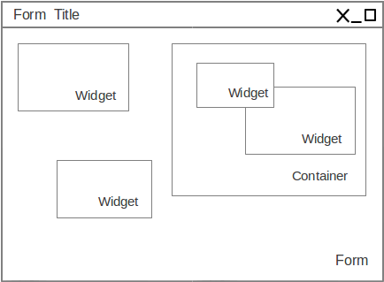
In the desktop client, forms are displayed in separate windows, can be minimized or expanded to the full screen, displayed in other forms as built-in elements (frames) and as internal windows in the DesktopPane component. In the HTML5 browser client, forms are displayed in the same way, but within a browser page.
New form creation
To create a new form layout and JavaScript code in the IDE, perform the following actions:
-
Select New in the parent directory context menu, or select the parent directory and click New File in the main menu, or click New File on the main toolbar, or use a corresponding keyboard shortcut.
-
Select Form type of the Platypus application element in the context menu, or select Choose file type Platypus application elements on the wizard first step and click Next.
-
Enter the name for the new application element in the Name field and click Finish to create it, or click Cancel to cancel.
Visual UI editor
Edit form components layout using the visual form editor. To open the editor double-click the application element in the project tree.
To edit the form:
-
Open the Design tab of the module editor.
-
Drag a widget, a container or a menu from the components palette onto the form surface.
-
Arrange the components on the form.
-
Set the general properties of the form and properties of each component on the Properties panel, e.g. text font, foreground and background colors.
-
Specify handlers functions of the form and components on the Properties/Events, write the event handlers code in the JavaScript editor.
-
Configure the form’s data model and write code responsible for data manipulations.
-
Save the form by clicking Save All on the Platypus Application Designer tool bar or by pressing Ctrl S shortcut.
Note
A form should contain JavaScript code, responsible for user interface. Business logic should be implemented in server modules.
Form’s structure is presented as a tree in the form inspector panel. Use the inspector to select a widget, a container or a menu, to move a component from one container to another, and to select the container layout.
Drag components up or down in the inspector tree or activate the Move Up, Move Down, and Change Order context menu items to set the order along the Z axis.
To run a quick preview of the form, click Preview design on the visual editor tool bar. The preview window opens, showing a visual representation of the form, which is identical to its look in runtime.
The anchors layout is enabled for all form’s containers by default. To choose some other layout for the specific container, select the layout menu item in the Set Layout submenu from the container’s context menu in the inspector component tree.
Add a component from the pallete using the visual editor, anchors are attached for the nearest container’s sides and width and height values are automatically set.
Change dimensions of the component and its location by using the mouse or arrows keys. When you move a component using arrows keys, the position of the component is tied to the grid. Hold down the Ctrl to move the component smoothly. Hold down the Shift key to expand the widget.
Note
To define form’s editor settings, use the properties setting dialog:Tools Options Miscellaneous GUI Builder.
To enable or disable an anchor, use anchors buttons on the form editor toolbar.
As an alternative way to specify the layout anchors, use widget node menu in the inspector: enable the corresponding anchor in the Anchor submenu. Thus, if there’s one anchor enabled for one coordinate, then this anchor and the appropriate dimension will be used. If there are two anchors enabled, then they will be used, and the dimension will be extended.
Specify values for anchors and dimensions explicitly, changing the values of the component’s properties panel in the Layout properties group: Left, Top, Right, Bottom, Left, Width, and Height.
Anchors properties values are specified as a strings together with the
indication of measurement units: pixels or percentages. If measurement
units are not specified, pixels are used. If a value is defined as a
percentage, this anchor and dimension will be changed while maintaining
the defined value when changing dimensions of the container, for example
: 60px, 30%, 40.
Use the component alignment control buttons on the form editor tool bar to align widgets in relation to each other. Alignment buttons become active when you select multiple widgets. To select multiple widgets, click them while holding down the Ctrl key.
Specify a component’s the properties and event handlers:
-
Click a form area, which is free from other components, or select a form node in the component inspector.
-
Change properties of the form on the Properties panel.
-
Specify the event handlers on the Properties/Events panel.
-
Write code of the handlers in the JavaScript editor.
-
To remove an event handler, delete the name of the handler from the corresponding event field; as a result, the <none> name is assigned to the handler and the handler function will be removed from the code.
Form API
Create a module instance in client JavaScript as follows:
-
Create an instance of a form with the help of the
newkeyword, using a module constructor, for example:var formInstance = new ();
where `
` is a form's constructor. -
Create an instance of the module with the help of the
newkeyword using specialFormconstructor, for example:var formInstance = new Form();
where `
` is the module constructor name string, for example,"MainForm";
To make a form visible use the show method:
formInstance.show();
An application supports a registry of its shown forms. For every form a
identifier can be specifyed to refer to the shown form in this registry,
to do this use form’s instance formKey property. By default a form’s
key set to its constructor name.
Use the Form.getShownForm() method, where formKey is a form’s key to
get the shown form by its key.
var formA = new FormA(); var formB = new FormB(); formA.formKey = 'A1'; formB.formKey = 'B1'; formA.show(); formB.show(); Form.getShownForm('A1').visible = false;
Get the array of the application’s shown forms registry using Form
object shown property:
for(var i=0;i < Form.shown.length;i++) { Logger.info(shownForms[i].title); }
Explicitly provide form keys before using Form.shown because the shown
forms registry uses this keys as identifiers.
Add a handler function to the shown form’s registry change event. Use
the Form object onChange property:
Form.onChange = function(e) { Logger.info(e.source.formKey); Logger.info(e.source.visible); };
The form properties are listed in the following table:
| Property | Description |
|---|---|
|
Form’s title text. |
|
The distance from the parent container top side. |
|
The distance from the parent container left side. |
|
The form’s width. |
|
The form’s height. |
|
|
|
The form’s identifier in the open forms registry. |
|
The form’s |
|
|
|
Opacity of the form, Number in the range of 0..1: 0 when it is completely transparent, 1 when form is completely opaque. |
|
|
|
|
|
|
|
|
|
|
|
|
|
|
|
The top-level container of the form. |
The form methods are listed in the following table:
| Method | Description |
|---|---|
|
Displays the form. |
|
Displays the form within the
|
|
Displays the form as a confirmation dialog. If
|
|
Displays the form on the container panel,
|
|
Closes the form. This method may be used to return a
value, selected using the dialog. If the |
|
Minimizes the form. |
|
Maximizes the form. |
|
Restores the previous state of the form. |
|
Brings the form to the forefront. |
Form events are listed in the following table:
| Event | Event type | Description |
|---|---|---|
|
|
Is called after rotating the mouse wheel. |
|
|
Is called after the mouse is clicked. |
|
|
Is called after adding a component into the form. |
|
|
Is called after hiding a component. |
|
|
Is called after removing a component from the form. |
|
|
Is called after changing the component size. |
|
|
Is called after displaying the component. |
|
|
Is called after getting the keyboard focus. |
|
|
Is called after losing the keyboard focus. |
|
|
Is called after pressing the keyboard key. |
|
|
Is called after releasing the keyboard key. |
|
|
Is called after the window activation. |
|
|
Is called after closing the form window. |
|
|
Is called before closing the form window. |
|
|
object Is called after deactivating the form window. |
|
|
Is called after retrieving the form from an icon on the panel. |
|
|
Is called after minimizing the form. |
|
|
Is called after opening the form window. |
The windowClosing event is cancelable. This event is useful for
invoking a dialog to confirm the window closing: if the handler returns
false, the form won’t be closed:
//Handles windowClosing event function formWindowClosing(evt) { return confirm("Close the window?"); }
To get access to the properties and events of the form from JavaScript code, use the corresponding property:
//Sets form's title self.title = "Document form"; //Handles onWindowClosing event self.onWindowClosing = function() { return confirm("Close the window?"); }
To get access to the top-level container, use the view property:
//Sets the form's background self.view.background = Color.BLACK;
In the above example the form title is set programmatically, and also an alternative way to specify a form event handler is provided.
Note
For the top-level container, the layout should be set by the designer and can’t be changed by program means.
Components events
Component events are not propogated to the its parent. A container’s event is generated only if it has not been generated for its child components. Thus, the form will recieve the mouse event only if it has occurred over an area, which is free from its children.
The base ComponentEvent object contains source property that
contains the event’s source component.
Use an event handler function as follows:
function onEventHandler(evt) { evt.source.background = Color.WHITE; }
The specific event objects also contain source property, as well as
their own specific properties. The following types of specific events
are defined: ContainerEvent, KeyboardEvent and MouseEvent.
ContainerEvent event object represents an event what is called when
something happens with the container, e.g. an component added or
removed, its specific propetries are listed in the following table:
| Property | Description |
|---|---|
|
Child component container operation is performed on. |
KeyEvent event object contains information about a keyboard event,
e.g. a key pressed or released, its specific propetries are listed in
the following table:
| Property | Description |
|---|---|
|
Key code associated with this event. |
|
|
|
|
|
|
|
|
MouseEvent event object contains information about a mouse event, e.g.
a mouse moved or a mouse key is clicked, its specific propetries are
listed in the following table:
| Property | Description |
|---|---|
|
Key code associated with this event. |
|
|
|
|
|
The number of mouse clicks associated with this event. |
|
|
|
|
|
|
|
|
Standard widgets
Standard widgets are simple components intended to organize application’s user interface.
To specify visual presentation of the widget, set its properties and event handlers in the visual editor or in JavaScript code.
Standard widgets have a set of common properties and events as well as specific properties and events.
The common properties for all components are listed in the following table:
| Property | Description |
|---|---|
|
|
|
Background color |
|
Font |
|
Popup menu |
|
Color |
|
Text, which is shown when hovering a cursor over the component |
|
Component border |
|
Cursor above the component |
|
|
|
|
|
|
|
Error message of this component. Validation procedure may set this property and subsequent focus lost event will clear it. |
Common events for all components are listed in the following table:
| Event | Handler parameters | Description |
|---|---|---|
|
|
Is called when main action performed |
|
|
Is called after adding the component |
|
|
Is called after hiding the component |
|
|
Is called after moving the component |
|
|
Is called after removing the component from its container |
|
|
Is called after changing the component size |
|
|
Is called after displaying the component |
|
|
Is called after getting the keyboard focus |
|
|
Is called after losing the keyboard focus |
|
|
Is called after pressing the keyboard key |
|
|
Is called after releasing the keyboard key |
|
|
Is called after pressing the keyboard key |
|
|
Mouse key is pressed and released |
|
|
Component is dragged by the mouse |
|
|
Mouse cursor has entered the component rectangle |
|
|
Mouse cursor has left the component rectangle |
|
|
Mouse cursor has changed its position |
|
|
Mouse key is pressed |
|
|
Mouse key is released |
|
|
Mouse wheel is rotated |
Label
Label is a widget with a short piece of text, images or text with an
image. The label does not respond to keyboard input events and can’t get
the keyboard focus.
The specific properties of this component are listed in the following table:
| Property | Description |
|---|---|
|
Text |
|
Icon |
|
Gap between the text and the icon, in pixels |
|
Horizontal position of the text in relation to
the icon, one of the following: |
|
Horizontal position of the text with the icon
relative to the component’s size, one of the following:
|
|
Vertical position of the text relative to the
icon, one of the following: |
|
Vertical position of the text with the icon
relative to the component’s size, one of the following:
|
To create a component of this type by program means, use the Label constructor, which can be called with a different number of parameters:
var label = new Label(, , );
where text is the text (optional), icon is an icon (optional), iconTextGap is a gap between the icon and text (optional).
After creating, if necessary, set the properties and component event handlers and add the component to the container:
label.text = "Message text"; view.add(label);
Button
Button is a simple button, which responds to the click action.
The properties of this component are listed in the following table:
| Property | Description |
|---|---|
|
|
|
Component’s text. |
|
Gap between the text and the icon, in pixels. |
|
Horizontal position of the text in relation to
the icon: |
|
Vertical position of the text in relation to
the icon: |
The specific component events are listed in the following table:
| Event | Handler parameters | Description |
|---|---|---|
|
|
Button click event |
To create a component of this type by program means, use the Button, which can be called with a different number of parameters:
var btn5 = new Button(, , , );
where text is text (optional), icon is an icon (optional), iconTextGap is a gap between the icon and text (optional), actionPerformed is a handler of the button clicking event (optional).
After creating, if necessary, set the properties and component event handlers and add the component to the container:
btn1.text = "Click me"; btn1.onActionPerformed = function() { alert("Clicked!"); } view.add(btn1);
ToggleButton
ToggleButton is a button with two states: selected and not selected.
This component looks like a standard button, but after a click action it and it will stay in a toggled state. You can use this widget, for example, when it is necessary to choose from the two options, but flags or switches are not suitable.
The list of ToggleButton widget properties is identical to the
Button widget properties, with the the following specific properties:
| Property | Description |
|---|---|
|
The button group this button belongs |
|
|
The specific component events:
| Event | Handler parameters | Description |
|---|---|---|
|
|
Button toggle event |
To create a component of this type by program means, use the ToggleButton constructor, which can be called with a different number of parameters:
var btn = new ToggleButton(, , , selected, );
where text is text, icon is an icon (optional), iconTextGap is a gap
between the icon and text, selected is set to true, if the button is
selected and false otherwise (optional), actionPerformed is a handler
function of the button clicking event (optional).
After creating, if necessary, set the properties and component event handlers and add the component to the container:
btn1.text = "Turn me on!"; btn1.onActionPerformed = function() { if(btn.selected) btn1.text = "Turn me off."; else btn1.text = "Turn me on!"; } view.add(btn1);
CheckBox
CheckBox is a component with two states: selected/not selected.
The specific component events are listed in the following table:
| Event | Handler parameters | Description |
|---|---|---|
|
|
The components state changing event |
To create a component of this type by program means, use the CheckBox constructor, which can be called with a different number of parameters:
var cb = new CheckBox(, , );
where text is text (optional), icon is an icon (optional), selected is
set to true, when the check box is selected and false otherwise
(optional), actionPerformed is a handler function of the check box
switching event (optional).
After creating, if necessary, set the properties and component event handlers and add the component to the container:
cb1.text = "Check box 1"; cb1.selected = true; cb1.onActionPerformed = function() { cb1.selected && alert("Check box 1 selected!"); } view.add(cb1);
RadioButton
RadioButton is a component with two states: selected/not selected.
Widgets of this type can be joined into groups. Only one widget of this
type can be selected in one group.
The list of RadioButton widget properties is identical to the Button
widget properties, but it includes the following specific properties:
| Property | Description |
|---|---|
|
The button group this button belongs |
|
The |
|
|
See the description of the Button widget for the list of RadioButton
widget properties.
| Event | Handler parameters | Description |
|---|---|---|
|
|
Radio button state switching event |
To create a component of this type by program means, use the RadioButton constructor, which can be called with a different number of parameters:
var rb4 = new RadioButton(, , );
where `
` is text (optional), `
` is set to `true` when the radio button is selected and `false`otherwise (optional), `
` is the button switching handler function (optional).After creating, if necessary, set the properties and component event handlers and add the component to the container:
rb1.text = "Radio button 1"; rb1.selected = true; rb1.onActionPerformed = function(evt) { rb1.selected && alert("Radio button 1 selected!"); } view.add(rb1);
ButtonGroup
ButtonGroup is a special kind of a component without its own visual
representation. After adding to the form, the button group component
will be added to the Other components tree node on the inspector panel.
The group of buttons enables the simultaneous selection of only one of
widgets belonging to the ToggleButton, RadioButton, and
RadioMenuItem types, for which the same button group is assigned. When
you select one of the widgets in the group, the other widgets will be
reset.
Set the buttonGroup property for the supported components types. To do
this, select the appropriate button group from the property field list
on the properties panel.
Use ButtonGroup constructor in your program:
var buttonGroup = new ButtonGroup();
To specify a ButtonGroup for a exclusive buttons, use component’s
buttonGroup property:
radioButton.buttonGroup = buttonGroup;
As an alternative method to add child buttons to the ButtonGroup, use
the add method:
buttonGroup.add();
where component is a button widget to add.
After creating, add button widgets to the group:
var rbA = new RadioButton("A", true); var rbB = new RadioButton("B", false); rbA.buttonGroup = buttonGroup; rbB.buttonGroup = buttonGroup;
TextField
TextField is a simple component, which allows you to edit single line
of text.
The properties of this component are listed in the following table:
| Property | Description |
|---|---|
|
The text for the widget. |
|
The text displayed when the actual value is absent. |
The specific component events are listed in the following table:
| Event | Handler parameters | Description |
|---|---|---|
|
|
Text input event: pressing the Enter key |
To create a component of this type by program means, use the TextField constructor, which can be called with a different number of parameters:
var tf2 = new TextField();
where `
` is the field text (optional).After creating, if necessary, set the properties and event handlers and add the component to the container:
tf.emptyText = "Enter your name..."; view.add(rb1);
Slider
Slider is a component, which allows you to visually select a value by
moving the slider lever within the specified interval.
The properties of this component are listed in the following table:
| Property | Description |
|---|---|
|
Maximum value |
|
Minimum value |
|
Horizontal or vertical orientation of the component:
|
|
Value |
The specific component events are listed in the following table:
| Event | Handler parameters | Description |
|---|---|---|
|
|
Slider movement termination event |
To create a component of this type by program means, use the Slider constructor, which can be called with a different number of parameters:
var sl = new Slider(, , , );
where `
` is the slider orientation, an object of the Orientation type(optional), min is a minimum value (optional), max is a maximum value (optional), value is the current value (optional).
After creating, if necessary, set the properties and component event handlers and add the component to the container:
var sl1 = new Slider(Orientation.HORIZONTAL); sl1.minimum = 0; sl1.maximum = 100; sl1.value = 50; s1l.onActionPerformed = function(evt) { Logger.info("Slider moved."); } view.add(sl1);
ProgressBar
ProgressBar is a component, which visually shows the progress of some
task.
For example, during the execution of a task the percentage of its completion may be displayed. In this case, set the minimum property value to 0, maximum set the maximum property value to 100 and specify the value when receiving new data on the progress of this task.
If you have no information about the current task progress or such data can’t be obtained, use the uncertainty mode, in which the indicator will show that the task was started but is not completed yet instead of its progress.
The specific properties of this component are listed in the following table:
| Property | Description |
|---|---|
|
Maximum value |
|
Minimum value |
|
Value of progress |
|
Text displayed inside a progress bar |
To create a component of this type, use the ProgressBar constructor, which can be called with a different number of parameters:
var pb = new ProgressBar(, );
where `
` is a minimum value (optional), `
` is a maximum value (optional).After creating, if necessary, set the properties and component event handlers and add the component to the container:
var pb1 = new ProgressBar(); pb1.minimum = 0; pb1.maximum = 100; view.add(pb1);
FormattedField
FormattedField is a component, which allows you to edit value of some
specific type as the text. So, a user sees just text and a program sees
a value of specific type e.g. date, number, boolean, string and etc.
Specify the set of characters, which will be considered acceptable to
enter in this field. Provide the value’s format and the widget’s value.
The value is converted into the required format before displaying.
For example, you can configure the widget to enter some date some predefined formats, and also set the custom format to enter strings.
The FormattedField properties is identical to the TextField widget
properties, but it includes the following specific properties:
| Property | Description |
|---|---|
|
Format string, check Java`java.util.Formatter` documentation. |
The formatted field is intended to display and enter values of a particular type. The format of displaying and editing can vary only within a given type. Therefore, when you programmatically create this widget, you should specify a value determining the type, within which this widget will work, before defining the format. After determining the value type, the format can be changed if the new format will be suitable for displaying and editing the values of this type.
Use the format setting dialog to specify the format string in the visual editor. Click the button in the format property field. Select a category from the following: number, date, time, percentage, currency, and mask. Select a predefined format for the selected category or specify the custom one in the Format field.
The specific component events are listed in the following table:
| Event | Handler parameters | Description |
|---|---|---|
|
|
Value input event: pressing the Enter key. |
To create a component of this type by program means, use the FormattedField constructor, which can be called with a different number of parameters:
var ff = new FormattedField();
After creating, if necessary, set the properties and component event handlers and add the component to the container:
var ff = new FormattedField(); ff.value = new Date(); ff.format = "dd.MM.yyyy HH:mm:ss";
PasswordField
PasswordField is a simple input component, which allows you to edit
single line of text. It displays placeholders instead of actual
characters.
The properties and events of PasswordField are identical to the
TextField widget.
To create a component of this type in JavaScript code, use PasswordField constructor, which can be called with a different number of parameters:
var pf = new PasswordField();
where `
` is text (optional).After creating, if necessary, set the properties and component event handlers and add the component to the container:
var pf = new PasswordField(); view.add(pf, ...);
TextArea
TextArea is the text component for editing and displaying multistring
text.
The properties and events of TextArea are identical to the TextField
widget.
To create a component of this type in JavaScript code, use TextArea constructor, which can be called with a different number of parameters:
var textArea = new TextArea();
where `
` is text (optional).var textArea = new TextArea(); view.add(textArea);
HtmlArea
HtmlArea is a component for editing and displaying HTML documents.
When showing a form in web-browser, the editor area is displayed as HTML WYSIWYG editor.
The properties and events of HtmlArea are identical to the TextField
widget.
To create a component of this type in JavaScript code, use HtmlArea constructor, which can be called with a different number of parameters:
var textArea = new HtmlArea();
where `
` is text (optional).var htmlArea = new HtmlArea(); htmlArea.text = "<p>Sample text</p>"; view.add(htmlArea);
Model widgets
Model widgets are components, which can interact with the data model and respond to the model’s datasets events.
You can bind a model widgets to any data model entity dataset (including "parameters" entity). This dataset will change in response to the user actions on the widgets and its changes will lead to automatic update of data displayed on all bound widgets.
Configure specific properties for binding to data model, using properties in the Model binding category.
Scalar model widgets represents a single dataset object and its specific
field. This data object is the object at the cursor position. Other more
complex model widgets as ModelGrid and ModelMap can represent
multiply objects in dataset and control the cursor in this dataset.
Scalar model widgets have the following common properties:
| Property | Description |
|---|---|
|
Bound model entity field. |
|
The current value for the component. |
Scalar model widgets common events are listed in the following table:
| Event | Handler parameter | Description |
|---|---|---|
|
The |
Occurs when the select button, located next to the component, is clicked. The select button is displayed only if the handler is defined. |
|
|
Occurs when preparing the widget for
displaying (both when it is used independently or as a |
Any model widget can be presented as an independent component and as a
ModelGrid widget cell. There is an "abstract" cell in each model
widget. It is available in the onRender event handlers.
RenderEvent object specific propetries are listed in the following
table:
| Property | Description |
|---|---|
|
The primary key of the data object. |
|
The "abstract" cell. |
For such a cell, the following properties are defined:
-
displayis the displayed text. -
styleis theStyleof displaying.
Model widgets also have the same basic properties and event as standard widgets. It is not recommended to specify handlers of low-level events (keyboard, mouse movement events, etc.) for model widgets.
The following example illustrates how to use onSelect event:
/** * Shows custom selector dialog and sets * the cell's editor's value. * */ function buttonOnSelect(aEditor) { var selector = new PetSelector(); selector.showModal(function(){ aEditor.value = selector.pet; }); }
onRender event usage example is as follows:
/** * Renders a cell with complex data */ function entityOnRender(evt) { var txt = ''; categories.find(categories.schema.CAT_ID, evt.id) .forEach(function(aDoc) { if(txt.length > 0) { txt += ' '; } txt += aCat.NAME ? aDoc.NAME : ''; }); evt.cell.display = txt; return true; }
ModelCheck
ModelCheck is a scalar model widget representing a check box, the
state of which is linked to an entity’s field of a Boolean, Number, or
String type.
The data of various types is displayed as boolean data by this widget. Data types conversion rules are as follows:
-
Widget’s value is displayed as
truewhen actual data is the following values: Boolean type:true, Number type: any number other than0ornull, String type: any string other than empty andnull. -
Widget’s
truevalue is converted to various types as follows: Boolean:true, Number type:1, String type:'true'. -
Widget’s
falsevalue is converted to various types as follows: Boolean type:false, Number type: 0, String type: an empty string.
To configure the widget model binding specifiy the field property for the component, select a parameter or a data model entity’s field in the data model field selection form.
To create a component of this type by program means, use the ModelCheckBox constructor:
var modelCheck = new ModelCheckBox();
After creating, if necessary, set the properties and component event handlers and add the component to the container:
modelCheck.field = model.entityA.schema.fieldA; view.add(modelCheck);
ModelCombo
ModelCombo is a scalar model widget representing a combo box that is
bound to some data model field. This widget uses other two fields of an
entity to generate visual representation and syncronise it to the value.
As other model widgets, it holds and edits model’s value and displays
some other looked up value. It also allows you to select a value from a
list. List items are also looked up while displaying.
ModelCombo widget has the following specific properties:
| Property | Description |
|---|---|
|
Value field of the component. |
|
Display field of the component. |
|
|
To configure the widget model binding:
-
Specify the field property for the component. Select a parameter or a data model entity field.
-
Specify the value field, i.e. the field, the values from which will be compared with the values of the list items, to do this, use the valueField property. Select a data model parameter or some entity field. The entity for this field must be the same as for displayField property, but different from the one specified for the
fieldproperty. -
Set the display field, i.e. a field, the values from which will be shown to the user. Use thedisplayField property. Select a data model parameter or a data model entity field. The entity for this field must be the same as for displayField property, but different from the one specified for the
fieldproperty. -
To allow selection of value from the list, enable the list property checkbox.
-
To allow a customized selection of the widget’s value, specify
onSelectevent handler.
To create a component of this type by program means, use the ModelCombo constructor:
var modelCombo = new ModelCombo();
After creating, if necessary, set the properties and component event handlers and add the component to the container:
//Specify value field as a model parameter: modelCombo.field = model.params.schema.paramA; //Lookup fields: modelCombo.valueField = model.entityB.schema.id; modelCombo.displayField = model.entityB.schema.name; view.add(modelCombo);
ModelDate
ModelDate is a scalar model widget representing a date and bound to
some date or timestamp field in the model.
ModelDate widget has the following specific properties:
| Property | Description |
|---|---|
|
|
|
|
To configure the widget model binding:
-
Specify the field property. Select a parameter or a data model entity field in the form for selecting a data model entity field.
-
Configure the date and time format by selecting from the drop-down list.
-
Enable the expanded flag to display the calendar in an expanded form. To ensure that the widget is displayed correctly, set its dimensions according to its full-scale view.
To create a component of this type by program means, use the ModelDate constructor:
var modelDate = new ModelDate();
After creating, if necessary, set the properties and component event handlers and add the component to the container:
modelDate.field = model.entityA.schema.dateField; modelDate.editable = true; view.add(modelDate);
ModelGrid
ModelGrid model widget is a powerful widget to display and enter data,
which is presented in a tabular form and as a tree. ModelGrid widget
is the most powerful UI component.
Note
At the current version of the platfom you can create and setup an
instance of ModelGrid only using visual editor.
ModelGrid component has the following features:
-
Entity’s data representation as a columns and rows.
-
Data cells editing, inserting new and deleting rows.
-
Fixed non-scrollable rows and/or columns.
-
Service column with the cursor pointer.
-
Entity’s data scrolling and cursor positioning.
-
Expandable dynamic columns.
-
Tree view of hierarchical data.
ModelGrid widget has the following specific properties:
| Property | Layout | JS | Description |
|---|---|---|---|
|
• |
[multiblock cell omitted] |
The component’s border. |
|
• |
• |
The number of the fixed grid columns. |
|
• |
• |
The number of the fixed grid rows. |
|
• |
• |
The |
|
• |
• |
The |
|
• |
• |
The service column’s type. |
|
• |
• |
The height of the grid’s rows. |
|
• |
• |
|
|
• |
• |
|
|
• |
• |
|
|
• |
• |
|
|
• |
• |
|
|
• |
• |
|
|
• |
[multiblock cell omitted] |
The bounded model entity for the grid. |
|
• |
[multiblock cell omitted] |
See tree option. |
|
• |
[multiblock cell omitted] |
See tree option. |
|
• |
[multiblock cell omitted] |
See tree option. |
|
[multiblock cell omitted] |
• |
All grid cells as an array. |
|
[multiblock cell omitted] |
• |
All selected grid cells as an array. |
|
[multiblock cell omitted] |
• |
Grid columns as an array. |
To configure ModelGrid properties:
-
To select the model entity for the component use the entity property under the Model binding propetries group. To delete the binding, clear the entity field.
-
Use the fixedColumns and fixedRows properties in the Apperance properties group to freeze the required number of columns on the left and/or rows on the top of the grid.
-
Configure the rowsHeaderType property to define appearance of the rows header. It has the following options: None — the service column is not displayed, Usual — the service column is displayed with the cursor icon, Check box — a check box control, which allows you to select multiple rows, Radio button — to show a radio button control, which allows you to select only one row of the grid.
-
Use the
onRenderevent handler, which will be called for each data grid cell, if a similar handler was not defined for their columns.
ModelGridColumn has the following properties:
| Property | Layout | JS | Description |
|---|---|---|---|
|
• |
[multiblock cell omitted] |
|
|
• |
[multiblock cell omitted] |
|
|
• |
• |
|
|
• |
[multiblock cell omitted] |
|
|
• |
• |
The column’s title string. |
|
• |
[multiblock cell omitted] |
See expandable option. |
|
• |
• |
|
|
• |
• |
The column’s width in pixels. |
|
• |
[multiblock cell omitted] |
The header style background color. |
|
• |
[multiblock cell omitted] |
The header style font. |
|
• |
[multiblock cell omitted] |
Model entity’s field bound to this column. |
|
• |
[multiblock cell omitted] |
See expandable option. |
|
• |
[multiblock cell omitted] |
See expandable option. |
|
• |
[multiblock cell omitted] |
See expandable option. |
|
• |
[multiblock cell omitted] |
See expandable option. |
|
• |
[multiblock cell omitted] |
See expandable option. |
|
• |
[multiblock cell omitted] |
See expandable option. |
|
• |
[multiblock cell omitted] |
See expandable option. |
‘ModelGrid` has ability to change it’s cells’ display style and to
select values using custom editors while editing cells. In order to use
these features, define onRender and onSelect event handlers in
particular columns. If onRender event handler is defined on a column,
it will be ivoked rather than similar event handler, defined on
ModelGrid. Refer to Model Widgets section to read
about how to deal with onRender and onSelect event handlers.
Use the form inspector: the inspector displays the grid’s columns node
as children of ModelGrid component node and allows you to edit them.
To add, remove and configure grid columns:
-
To fill all
ModelGridcolumns corresponding to the fields of the linked data model entity, select Fill columns — in this case, link to the entity fields will be performed automatically. -
To manually add a column to
ModelGriddrag it from the components palette or add it using Add from palette Model-aware controls Model grid columncontext menu item in form inspector. -
To add a column as a child to another column use parent column’s node Add from palette Model-aware controls Model grid column context menu item in form inspector.
-
Move the selected columns up and down using the Move up, Move down or Change Order context menu items or by draggining it by mouse.
In standard mode a column represents entity’s field data. To configure the column in standard mode:
-
Specify the bound entity’s field, to which the column should be linked. To do this, use the field property and select a field from the bound entity.
-
Define a widget, which will be used for displaying in the column cells. Select its type from the view context menu of the column’s node in the inpector. The choices will be compatible with the type of the linked entity field. Set the properties of the corresponding widget (see the corresponding sections for the description of the model widget setting procedure).
In expanded mode, a column can contain an arbitrary number of child columns. Their combination can be changed dynamically at runtime.
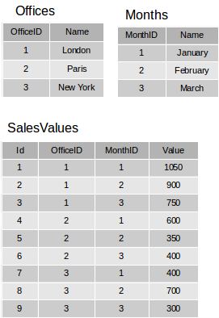
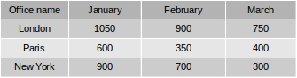
The combination of dynamic children columns is determined by a special column entity in the data model. Values for the child column cells are determined by another cell entity, the objects of which also contain references to objects in the main entity (grid’s rows source) and to the column entity objects.
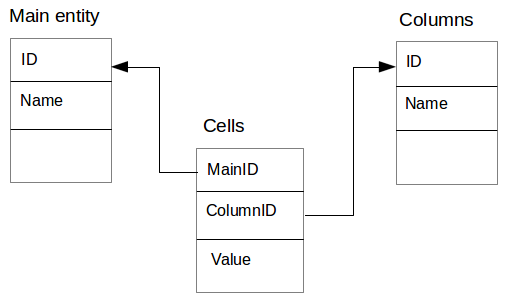
Use the following ModelGridColumn propeties to configure an expandable
column:
| Property | Description |
|---|---|
|
|
|
|
|
Columns entity representing data to form columns. |
|
The field in Columns entity for dynamic columns titles. |
|
Cells entity. |
|
The value field in Cells entity. |
|
The field in Cells entity refering to the primary key in Columns entity. |
|
The field in Cells entity refering to the primary key in Main entity. |
The widget can be configured to display a tree structure in the first column on the left (next to the service column). Other columns in this grid are displayed as usual.
To show a tree we need an entity, which contains a field referring to some other field, thus forming a hierarchical data structure.
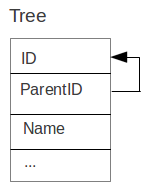
A tree structure in the grid can function in two modes:
-
The simple mode, in which all tree levels are loaded by a single query.
-
The lazy mode, in which each level is loaded as the nodes are expanded.
Note
The simple tree operation mode is acceptable only for small sets of data, since in this mode all tree elements are requested simultaneously and it can lead to the performance problems and slow user interface. For large data sets, use the lazy tree operation mode.
To configure a tree in the simple mode:
-
Specify a value for the
unaryLinkFieldproperty. For this property select the link source field, which is responsible for hierarchical relationships, in the example figure above it is theParentIDfield. To remove the selection, clear the property.
Important
The link source field should be in the same data set as configured as the grid’s rows source.
To use a lazy tree grid, create an entity based on a query, which returns child elements by the parent identifier passed as a parameter, for example:
/** * @name LazyTree */ SELECT * FROM tree_table t WHERE t.PARENT_ID = :parentId OR (:parentId IS NULL AND t.PARENT_ID IS NULL)
To configure lazy tree for ModelGrid:
-
Specify
unaryLinkFieldproperty. For this property select the link source field, which is responsible for hierarchical relationships, in the example figure above it is theParentIDfield. -
Set
param2GetChildrenproperty. Select the entity’s parameter that is responsible for fetching child records. In the code snippet above this corresponds to:parentIdparameter. -
Set
paramSourceFieldproperty. Select the field that will be used as a source for the parameter to get child records. The field’s value will provided to the parameter specified byparam2GetChildrenproperty. In the example above this property should be set toIDprimary key field.
ModelImage
ModelImage is a scalar model widget to display an image. The state of
this component is linked to a field of the data model, which contains
binary data of the image in one of the following formats: GIF, JPEG,
PNG. This field usually corresponds to the BLOB type in the database.
Note
In the current Platypus Platform version, this component is supported only in the J2SE client.
ModelImage widget has the following specific properties:
| Property | Description |
|---|---|
|
|
|
|
To configure the widget:
-
Set the entity property for the component, using the field property on the properties panel; select the data model parameter or data model entity property in the dialog.
-
Set the
plainproperty to prevent image scaling.
To upload an image or other binary file into the database, open the file
selection dialog in the component selection event handler. In the
handler, assign a file byte array to the value property of the
ModelImage control. Then the contents of the file be added to the
control and the corresponding entity field will be changed. If you later
request saving of the model.save() model, the file contents will by
saved by the model in usual way.
modelImage.onSelect = function(aEditor){ selectFile(functon (file) { aEditor.value = readFile(file); }); }
To create a component of this type by program means, use the ModelImage constructor:
var modelImage = new ModelImage();
After creating, if necessary, set the properties and component event handlers and add the component to the container:
modelImage.field = model.entityA.schema.images; view.add(modelImage);
ModelFormattedField
ModelFormattedField is a scalar model widget, the state of which is
linked to a field of the data model string or number type. The widget
can be used to display and enter text. You can apply specified
formatting to the displayed value and impose restrictions on entered
data.
ModelFormattedField widget has the following specific properties:
| Property | Description |
|---|---|
|
Format string, check Java`java.util.Formatter` documentation. |
To configure the widget:
-
Set the entity property for the component, using the field property on the properties panel; select the data model parameter or data model entity property in the dialog.
-
If necessary, set handlers for selection and data changing events.
-
Configure the format of displaying by setting a value for the format property; see the section dedicated to the FormattedField widget for information on using this property.
To create a component of this type by program means, use the ModelFormattedField constructor:
var mff = new ModelFormattedField();
After creating, if necessary, set the properties and component event handlers and add the component to a container:
mff.field = model.entityA.schema.dateField; mff.format = "dd.MM.yyyy HH:mm:ss"; view.add(mff);
ModelTextArea
ModelTextArea is a scalar model widget, the state of which is linked
to a field of the data model of string or number type. The widget can be
used to display and enter text.
ModelTextArea widget has the following specific properties:
| Property | Description |
|---|---|
|
|
To configure the widget:
-
Set the entity property for the component, using the field property on the properties panel; select the data model parameter or data model entity property in the dialog.
-
If necessary, set handlers for selection and data changing events.
To create a component of this type by program means, use the ModelTextArea constructor:
var mta = new ModelTextArea();
After creating, if necessary, set the properties and component event handlers and add the component to the container:
mta.field = model.entityB.schema.textField; view.add(mta);
ModelMap
ModelMap widget is used to display a map and objects on it. This
widget displays a map by loading bitmap tiles from the network using a
given URL. An arbitrary number of layers are imposed upon the map to
display objects.
The map component allows you to position the map, change its scale, turn layers on and off, select objects, etc.
Note
In the current Platypus Platform version, this widget is supported only in the J2SE desktop client.
Coordinates and shapes of the displayed objects should be presented using the "Geometry" data type. The layer entity should contain one column of the "Geometry" type and an arbitrary number of columns containing additional attributes.
Each layer should have an assigned entity, which contains information about objects. One entity can be linked with one or more layers. If the entity is linked with several layers, a field with information about entity instance belonging to the layer should be defined. In this case, each layer should have its own identifier for this field. A layer identifier must be a positive integer.
ModelMap widget has the following specific properties:
| Property | Description |
|---|---|
|
URL for tiles source. |
To configure the map:
-
Specify the map title by filling out the Title field.
-
Link the data model parameter to the map scale: to do this, click the select button next to the Zoom factor parameter field, on the form for selecting a data model field choose the data model parameter; to remove the parameter link, click the clear button.
-
Provide a description of the coordinate system used by the map in the well known text format (WKT). To do this, fill out the Geographic CRS WKT field. This text should also contain projected
CRSdefinition. -
Specify the map event handler by filling out the Map event listener field — an event handler will be created.
The backingURL and Geographic CRS WKT values are specific for map tiles providers, such as Open Street Map:
-
An example of value for backingURL:
http://%s.tile.openstreetmap.org/%d/%d/%d.png -
An example of value for Geographic CRS WKT:
PROJCS["WGS 84 / World Mercator",GEOGCS["WGS 84",DATUM["WGS_1984",SPHEROID["WGS 84",6378137,298.257223563,AUTHORITY["EPSG","7030"]],AUTHORITY["EPSG","6326"]],PRIMEM["Greenwich",0,AUTHORITY["EPSG","8901"]],UNIT["degree",0.01745329251994328,AUTHORITY["EPSG","9122"]],AUTHORITY["EPSG","4326"]],UNIT["metre",1,AUTHORITY["EPSG","9001"]],PROJECTION["Mercator_1SP"],PARAMETER["central_meridian",0],PARAMETER["scale_factor",1],PARAMETER["false_easting",0],PARAMETER["false_northing",0],AUTHORITY["EPSG","3395"],AXIS["X",EAST],AXIS["Y",SOUTH]]
To create a component of this type by program means, use the ModelMap constructor:
var modelMap = new ModelMap();
After creating, if necessary, set the properties and component event handlers and add the component to the container:
view.add(modelMap);
ModelSpin
ModelSpin is a scalar model widget, the state of which is linked to a
field of a data model entity of number type. One can input numbers
either from the keyboard or using buttons to increase/decrease values.
ModelSpin widget has the following specific properties:
| Property | Description |
|---|---|
|
|
|
Determines the lower bound of spinner’s value. If it’s |
|
The upper bound of spinner’s value. If it’s |
|
The spinner’s value change step. Can’t be |
|
The text displayed when the actual value is absent. |
To create a component of this type by program means, use the ModelSpin constructor:
var modelSpin = new ModelSpin();
After creating, if necessary, set the properties and component event handlers and add the component to the container:
modelSpin.field = model.entityC.schema.fieldC; view.add(modelSpin);
Containers
Containers are components, which can contain other components e.g. widgets or other containers and control their child components size and location.
Containers are represented as panel component with specific layout in the visual editor.
The layout of a panel can be changed using the editor. At runtime, panel with particular layout will be replaced by the corresponding container.
Containers have a set of properties and events common for all components as well as their own specific properties and events.
The common methods for all containers:
| Method | Description |
|---|---|
|
Removes a child component |
|
Returns a child component by its numeric index |
|
Removes all child components |
The common property all containers:
| Property | Description |
|---|---|
|
The number of child components (read-only) |
AnchorsPane
AnchorsPane is a lightweight container with the anchors layout.
Anchors layout provides a simple, flexible yet powerful layout algorithm, which allows you to build complex user interfaces.
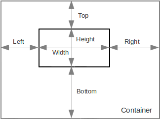
Configure the position and behavior of a widget in the container by defining Left, Top, Right, Bottom anchors and Width and Height settings of the component. You can specify two of the three properties by the horizontal and vertical axis.
Аt the same time can be set two anchors or one anchor and one dimension values. The set properties are fixed and maintained when changing dimensions of the container. If the property is not defined, it is stretched along with the dimensions of the container.
Use AnchorsPane constructor in form’s JavaScript code:
var pane = new AnchorsPane();
To add child components to the container, use the add method and pass a child component and object of the Anchors type as parameters to this method.
pane.add(, );
where component is a component to add, anchors is an object of the Anchors type.
var pane = new AnchorsPane(); var comp = new Button("Sample"); pane.add(comp, new Anchors(12, null, 14, 22, null, 24));
In the above example a button with the specified Left, Right, Top, and Bottom anchors is added to the anchor pane.
Anchors object defines component’s binding anchors in a container with
anchors layout.
To create an Anchors object, use its constructor by passing values for
the corresponding anchor as parameters:
var anchors = new Anchors(, , , , , );
where left is a left anchor, width is width, right is a right anchor, top is a top anchor, height is height, bottom is a bottom anchor.
Each anchor can be specified in pixels; to do this, define an anchor
using a number or string with the " px" symbols added, for example:
100, "100px". To specify an anchor in percents, define an anchor
using a string with the "%" symbol added, for example: "30%".
According to the rules of anchor layout, you can define two anchor values per coordinate.
If the anchor value is not set, pass the null value to the
corresponding parameter, for example:
var anchors = new Anchors(100, 200, null, 100, 100, null); var panel = new AnchorsPane(); panel.add(new Label("Test"), anchors);
There’s also alternative syntax for adding a child component: pass the JavaScript object with the left, width, right, top, height, bottom properties as a second parameter to the add method. An example of code with the same execution results:
var pane = new AnchorsPane(); var comp = new Button("Sample"); pane.add(comp, { left : 12, right : 14, top : 22, bottom : 24 });
BorderPane
BorderPane is a lightweight container with the border layout.
Border layout is a simple way of arranging components, when a container changes the position and dimensions of its components to the fit five regions: northern, southern, western, eastern and center. Each area can contain only one component, which is determined by one of the following constants: North, South, East, West, Center.
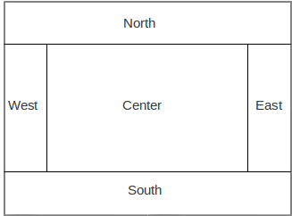
Explicitly set the value of the property, which controls the position of the component in the container. To do this, change widget Direction property fields at the Layout property group, by selecting one of the values from the drop-down list.
Use BorderPane constructor to create this container in JavaScript code:
var pane = new BorderPane(hgap, vgap);
where hgap is the horizontal gap (optional) and vgap is the vertical
gap (optional).
To add child components to the container, use add instance method:
pane.add(, , );
where component is a component to add, place is an instance of a
HorizontalPosition or VerticalPosition constants, determining the
region (optional) and size is the size of the component by the provided
place direction (optional).
The following example shows how to create a BorderPane container and
add to this container two child components:
var pane = new BorderPane(); var topComp = new Button("Top"); pane.add(topComp, VerticalPosition.TOP); var bottomComp = new Button("Bottom"); pane.add(bottomComp, VerticalalPosition.BOTTOM);
AsolutePane
AbsolutePane is a lightweight container with the absolute positioning,
e.g. without layout rules.
The absolute layout positons child components using its explicit position and dimensions.
It is generally not recommended to use this layout, because when changing the dimensions of the container, the position of its components is not changed or you’ll have to recalculate positions and sizes by your program. However, in some cases, using this layout makes sense, for example, when creating a simple animation.
Set X, Y, width and height parameters for each component in the container. To do this, select a component and set values for the X, Y, Width and Height fields on the properties panel in the Layout properties group. The Preferred value allows you to set the automatic calculation of width and height of the components according to their content.
Use AbsolutePane constructor to create this container in JavaScript code:
var pane = new AbsolutePane();
To add child components to the container, use add instance method:
pane.add(, );
where component is a component to add and pos is an JavaScript object
with the left, width, top, height properties.
The following example shows how to create an AbosolutePane container
and add to this container to the components tree:
var pane = new AboslutePane(); var comp = new Button("Sample"); pane.add(comp, { left : 100, right : 150, width : 32, height : 32 });
GridPane
GridPane is a lightweight container with the grid layout. It is
intended for static UI designs.
GridPane lays components out by the grid, all columns must have the
same width and all rows must have the same height.
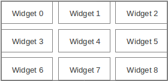
To set the number of columns and rows and the vertical and horizontal interval between cells, select the GridLayout node in the component tree of the inspector and change the corresponding values on the properties panel.
If you set a value other than zero for the number of columns and rows, column number setting is ignored. Instead of this, the number of columns is determined by the number of rows and the total number of components in the container.
Use GridPane constructor to create this container in JavaScript code:
var pane = new GridPane(, , , );
Where rows is the number of grid rows, cols is the number of grid columns, hgap is the horizontal gap (optional) and vgap vgap the vertical gap (optional).
To add child components to the container, use add instance method, which adds a component to the next avaliable position:
pane.add();
where component is a component to add.
Use child method to get an child component at the specified row and
column, if the target position is empty the method will return null:
var comp = pane.child(, );
where row is the row of the component and column is the column of the grid position.
The following example shows how to create an GridPane container:
var pane = new GridPane(3, 1); var comp1 = new Button("1"); var comp2 = new Button("2"); var comp3 = new Button("3"); pane.add(comp1); pane.add(comp2); pane.add(comp3);
FlowPane
FlowPane is a lightweight container with the flow layout.
Flow layout aligns components into a row/line. Dimensions of the components are calculated according to their content (component preferences). If the component doesn’t fit into a row, it is transferred to the next line.
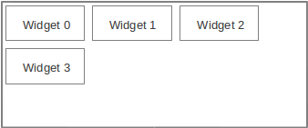
Use FlowPane constructor to create this container in JavaScript code:
var pane = new FlowPane(, );
Where hgap is the horizontal gap (optional) and vgap vgap the vertical gap (optional).
To add child components to the container, use add instance method:
pane.add();
where component is a component to add.
The following example shows how to create an FlowPane container and
add this container to its parent container:
var pane = new FlowPane(); var comp = new Button("Sample"); pane.add(comp);
CardPane
CardPane is a lightweight container with the card layout.
Card layout allows you to arrange components as a stack of cards, one above the other; only the top component is visible. This layout manager is usually used to create a step-by-step wizard.
Each component has an assigned card name, which can be set on the component properties panel in the Card Name field of the Layout properties group. This name can be used later to select a visible component.
To select a visible component, use show(cardName) method, where `
` is the card name.Use CardPane constructor to create this container in JavaScript code:
var pane = new CardPane(, );
Where hgap is the horizontal gap (optional) and vgap vgap the vertical gap (optional).
To add child components to the container, use add instance method:
pane.add(, );
where component is a component to add and cardName is the name of the card.
The following example shows how to create an FlowPane container and
add this container to the components tree:
var pane = new CardPane(); var compA = new Button("SampleA"); pane.add(comp, "A"); var compB = new Button("SampleB"); pane.add(comp, "B"); var compC = new Button("SampleC"); pane.add(comp, "C"); pane.show("B");//Shows the SampleB button
BoxPane
BoxPane is a lightweight container with the box layout.
The box layout arranges components in the order, in which they were added to the container, one after the other, back to back.
Specify an axis, along which the Box layout manager will arrange components. For this select the BoxLayout node in the inspector component tree and select the Axis property value from the list on the properties panel:
-
HORIZONTAL for components are laid out horizontally from left to right.
-
VERTICAL for components are laid out vertically from top to bottom.
Use BoxPane constructor to create this container in JavaScript code:
var pane = new BoxPane();
Where orientation is a value of Orientation.HORIZONTAL or
Orientation.VERTICAL constants (optional). By default
Orientation.HORIZONTAL orientation is specified.
To add child components to the container, use add instance method:
pane.add();
where component is a component to add.
The following example shows how to create an BoxPane instance and add
a component to this container:
var pane = new BoxPane(Orientation.VERTICAL); var comp = new Button("Sample"); pane.add(comp);
TabbedPane
TabbedPane component allows the user to switch between a group of
components by clicking tabs with titles and icons.
Component’s specific properties:
| Property | Description |
|---|---|
|
Active tab’s component |
|
Active tab index |
Component’s specific events:
| Event | Event type | Description |
|---|---|---|
|
|
Tab switching event |
To create a component of this type by program means, use the TabbedPane constructor:
var pane = new TabbedPane();
To add child components to the container, use the add method and pass a child component as well as a tab title and an optional icon setting as parameters to this method:
pane.add(, , );
where component is a component to add, text is the tab’s label text, icon is the tab’s label icon (optional).
An example of code using the TabbedPane container:
var pane = new TabbedPane(); var tab1 = new AnchorsPane(); var tab2 = new AnchorsPane(); pane.add(tab1, "Tab 1"); pane.add(tab2, "Tab 2");
SplitPane
SplitPane container is used to display two (and only two) splitted
components; the user can change their size by moving the separator.
Split pane setup in form editor:
-
Drag-and-drop a container of the type from the palette, exactly two components to be added.
The specific properties of the SplitPane:
| Property | Description |
|---|---|
|
The separator’s orientation: |
|
The split pane divider’s location in pixels |
|
|
|
The first component of the container. |
|
The second component of the container. |
To create a component of this type by program means, use the SplitPane constructor with an optional parameter for specifying orientation:
var pane = new SplitPane();
where orientation is an object of the Orientation type, which defines orientation of the panel separator (optional). The container uses the horizontal orientation by default.
As an alternative to the firstComponent and
`secondComponent`properties use add method:
pane.add();
where component is the first and then the second component to add.
var pane = new SplitPane(Orientation.VERTICAL); var comp1 = new AnchorsPane(); var comp2 = new AnchorsPane(); pane.firstComponent = comp1; pane.secondComponent = comp2;
ScrollPane
ScrollPane is a container, which supports scrolling of its content.
Usually another container is added to this one, using ScrollPane as a
wrapper.
Specific properties of the container:
| Property | Description |
|---|---|
|
A wrapped component. |
To create a component of this type by program means, use the ScrollPane constructor, which can be called with a different number of parameters:
var pane = ScrollPane();
where component is a component, which is added inside the scroll panel (optional).
You also can use the view property, for example:
pane.view = ;
Alternatively you can add one child component to the container using the add method, for example:
var wrapper = new ScrollPane(); var pane = new AnchorsPane(); wrapper.add(pane);
ToolBar
ToolBar is a container used to display components, which are
responsible for the most common user actions.
Toolbars are intended to display a set of buttons (usually without labels, but with tooltips and small, clearly visible icons) which trigger the most frequently used application actions.
Components in the toolbar are stacked one-to-one according to the applied orientation.
To create a component of this type by program means, use the ToolBar constructor:
var toolbar = new ToolBar();
where floatable is true when the tool bar can be moved and false
otherwise (optional). By default set to false.
To add child components to the container, use the add method and pass a child component as well as a tab title and an optional icon setting as parameters to this method:
pane.add();
where component is the component to add.
For example:
var toolbar = new ToolBar(); var b1 = new Button(); b1.icon = Icon.load("1.png"); pane.add(b1); var b2 = new Button(); b2.icon = Icon.load("2.png"); pane.add(b2);
DesktopPane
DesktopPane is used to create a multi-document interface.
Forms can be displayed inside this container. Add forms to the container in your program. After adding, these forms can be moved, closed, minimized or expanded to the full container size.
To create a component of this type by program means, use the DesktopPane constructor:
var pane = new DesktopPane();
The list of specific methods of the component:
| Property | Description |
|---|---|
|
Minimizes all frames on the pane. |
|
Restores frames original state and location. |
|
Maximizes all frames on the pane. |
|
Closes all frames on the pane. |
The specific property of the component:
| Property | Description |
|---|---|
|
An array of all frames on the pane (read-only). |
To add a form to a DesktopPane:
-
Create a new form instance.
-
Add this new form to the desktop by calling the showInternalFrame(desktopPane) method where desktopPane is a
DesktopPaneobject instance.
Example:
var desktop = new DesktopPane(); var myForm = new InnerForm(); myForm.showInternalFrame(desktopPane);
Menus
Menus components provide a convinient way to let the user choose one of several options.
MenuBar
MenuBar component is a form’s main menu bar, into which individual
menus can be added. This compontent is a kind of a container and
inherits it common properties and methods.
After adding this component from the palette, the menu bar contains some default menus, this menus can be changed or deleted.
To create a component of this type by in your code, use the MenuBar constructor:
var menuBar = new MenuBar(); view.add(menuBar);// add it to the root container
The list of specific methods of the component:
| Property | Description |
|---|---|
|
Adds a new menu to the menu bar, where menu is a |
Menu
Menu is an individual menu, it can contain MenuItem and
MenuSeparator components. This compontent is a kind of a container and
inherits it’s common properties and methods.
Add new Menu components on to the MenuBar from the components
pallete in the visual editor.
Add the submenu into a Menu by selecting Add From Palette in the
context menu.
To create a component of this type by in your code, use the Menu constructor:
var menu = new Menu(); menuBar.add(menu);
The list of specific properties of the component:
| Property | Description |
|---|---|
|
Menu’s text label. |
|
The parent container (read-only). |
The list of specific methods of the component:
| Property | Description |
|---|---|
|
Adds an item to the menu, where comp is the |
PopupMenu
PopupMenu is an options selection window, which can be assigned to any
component. This compontent is a kind of a container and inherits it’s
common properties and methods.
Add the PopupMenu component onto the form by dragging it from the
palette in visual editor. After adding, this component will have no
visual representation in the form’s layout, it will be avaliable under
the Other components node in the inspector component tree.
Add items to the pop-up menu the same way as to the standard menu.
To assign a popup menu for a component in the visual editor, define a
component’s PopupMenu property and select the required popup menu from
the list.
To create a component of this type by in your code, use the PopupMenu constructor:
var popup = new PopupMenu(); var label = new Label("Sample"); label.componentPopupMenu = popup;
The list of specific methods of the component:
| Property | Description |
|---|---|
|
Adds an item to the menu, where comp is the |
MenuItem
The default MenuItem object contains a simple labeled menu item.
To create a component of this type by in your program, use the MenuItem constructor:
var menuItem = new MenuItem(, , );
where text is the text of the component (optional), icon is the icon of the component (optional), actionPerformed the function for the action performed handler (optional).
The list of specific properties of the component:
| Property | Description |
|---|---|
|
Menu item’s text label. |
|
Menu item’s |
|
The parent container (read-only). |
An example of code using MenuItem component:
var item = new MenuItem("Sample"); item.onActionPerformed = function(evt) { alert("Sample selected.") } menu.add(item);
CheckMenuItem
CheckMenuItem is a menu item combined with a checkbox.
To create a component of this type by in your program, use the CheckMenuItem constructor:
var checkMenuItem = new CheckMenuItem(, , );
where text is the text of the component (optional), selected is true
when the check box is selected and false otherwise (optional),
actionPerformed the function for the action performed handler
(optional).
The list of specific properties of the component:
| Property | Description |
|---|---|
|
Menu item text. |
|
|
|
The parent container (read-only). |
A menu item of this type can be added to a ButtonGroup component,
which is shared by other check boxes and radio buttons, including
elements which are not present in the menu.
RadioMenuItem
RadioMenuItem is a menu item combined with a radio button.
To create a component of this type by in your program, use the RadioMenuItem constructor:
var radioMenuItem = new RadioMenuItem(, , );
where text is the text of the component (optional), selected is true
when the check box is selected and false otherwise (optional),
actionPerformed the function for the action performed handler
(optional).
The list of specific properties of the component:
| Property | Description |
|---|---|
|
Menu item text. |
|
|
|
The button group this component belongs |
|
The parent container (read-only). |
A menu item of this type can be added to a ButtonGroup component,
which is shared by other check boxes and radio buttons, including
elements which are not present in the menu.
MenuSeparator
MenuSeparator is a separator of menu items. Use this component to
visually split the groups of menu items.
To create a component of this type by in your program, use the MenuSeparator constructor:
var separator = new MenuSeparator();
The list of specific properties of the component:
| Property | Description |
|---|---|
|
The parent container (read-only). |
UI utilities API
Style
Style object, which can inherit the property values from the parent
style.
Style properites list:
| Property | Description |
|---|---|
|
Alignment: |
|
Background color |
|
Folder node icon |
|
Font |
|
Color |
|
Icon |
|
Leaf node icon |
|
Open folder node icon |
|
Parent style object |
To create a style object by program means, use a constructor, which can accept the parent style object as a parameter:
var style1 = new Style(); var style2 = new Style();
Icon
Icon is a bitmap picture.
To create an icon object, use the factory load method of the Icon object:
var icon = Icon.load();
where path is the name of the icon file, relative path of an application or URL.
The icon file name will be used for accessing the built-in collection of icons.
An example of using an icon to create a button:
var carIcon = Icon.load("car.png"); var b = new Button("Car", carIcon); view.add(b);
FontStyle
FontStyle object contains constants, which can be used to set font
styles.
| Property | Description |
|---|---|
|
Standard font |
|
Bold |
|
Italics |
|
Bold italics |
Example of usage:
var italicFontStyle = FontStyle.ITALIC;
Font
Font object.
Object properties:
| Property | Description |
|---|---|
|
Name of the font family |
|
Style |
|
Size |
To create a font object, use the Font constructor:
var font = new Font(, , )
where family is a string of the font family name; fontStyle is a font style of the FontStyle type, size is a font size.
Example:
var font = new Font("Verdana", FontStyle.BOLD, 14);
Color
Color represents color an the object.
The color object contains constants of main colors:
| Property | Description |
|---|---|
|
White |
|
Light gray |
|
Gray |
|
Dark gray |
|
Black |
|
Red |
|
Pink |
|
Orange |
|
Yellow |
|
Magenta |
|
Cyan |
|
Green |
|
Blue |
To create an object of an arbitrary color, use the Color constructor by passing it three RGB integers as parameters:
var color = new Color(, , );
where R, G, B are red, green and blue constituents in the form of integers.
Example of usage:
button.foreground = Color.BLUE; var IVORY_COLOR = new Color(255, 255, 240); panel.background = IVORY_COLOR;
HorizontalPosition
HorizontalPosition is the horizontal position constants object.
This object contains constants, which determine the horizontal position:
| Property | Description |
|---|---|
|
To the left |
|
Center |
|
To the right |
Example of usage:
var horizontalPosition = HorizontalPosition.CENTER;
VerticalPosition
VerticalPosition is the vertical position constants object.
This object contains constants, which determine the vertical position:
| Property | Description |
|---|---|
|
To the top |
|
Center |
|
To the bottom |
Example of usage:
var verticalPosition = VerticalPosition.CENTER;
Orientation
Orientation is the orientation constants object.
This object contains constants, which determine the orientation:
| Property | Description |
|---|---|
|
Horizontally |
|
Vertically |
Example of usage:
var orientation = Orientation.HORIZONTAL;
Dialogs API
Use this global functions to display custom dialogs:
| Function | Description |
|---|---|
|
Displays an info message, where |
[multiblock cell omitted] |
|
[multiblock cell omitted] |
|
|
Displays a prompt window, returns the response string, where |
[multiblock cell omitted] |
|
[multiblock cell omitted] |
|
|
Displays a dialog with confirmation, where |
[multiblock cell omitted] |
|
|
Displays a dialog, which allows the user to select a file; returns a file object, where |
[multiblock cell omitted] |
|
[multiblock cell omitted] |
|
|
Displays a file selection dialog, whrere |
[multiblock cell omitted] |
|
[multiblock cell omitted] |
|
Code examples:
alert("Message title", "Message"); var txt = prompt("Enter text here", "Some default text"); if (confirm("Confirm?")) { // Do something here... }
Installation and configuration
The application designer software package is included into the developer’s kit and can be bundled with the Platypus Platform runtime installation.
If the developer’s kit is supplied as an archive, unpack its contents to the folder of your choice on the hard drive.
Note
Platypus Platform runtime installation instructions are provided in the Administration Guide.
System requirements
System requirements for installing the developer’s kit on a computer includes:
-
32-bit (x86) or 64-bit (x64) CPU, 1 GHz or above
-
2 GB (for 32-bit system) or 3 GB (for 64-bit system) RAM
-
10 GB of free disk space
-
Operating system with graphical user interface: Windows or Linux
-
Oracle JDK 7
-
Internet access for updates downloading
Installation guide
To install the developer’s kit, perform the following actions:
-
Run the
platypusdesigner-windows.exefile for Windows OS orplatypusdesigner-linux.shfor Linux. The Linux user must have access rights to launch the installer. -
Click Next to proceed to the next installation step.
-
Read licensing terms and conditions; check the I accept the terms of the license agreement option to accept; click Next to proceed to the next step.
-
Select the applications installation directory and options for creating shortcuts on the desktop and in the installed programs menu; click Next to proceed to the next step.
-
Click Install to begin the Platypus Application Designer installation process.
-
After the installation process is finished, click Finish; check the Launch Platypus application designer after the installer closes option to launch the designer.
Note
Specify the path to the JDK in the jdkhome parameter in the Platypus
Application Designer configuration file at
platypusdesigner/etc/platypusdesigner.conf, if the its installation
location is other than default. Incorrect value of the jdkhome
parameter can lead to errors which may occur when launching the
designer.
To remove Platypus Application Designer from you computer, perform the following actions:
-
Use the your OS standard mechanism of programs removal, as an alternative, use the
uninstall.exeprogram for Windows oruninstall.shfor Linux from the installation directory. -
Confirm the components removal by clicking Finish button; if necessary, select the option of removing configuration data from the user’s directory.
Configuration tips
Platypus Application Designer supports localization of menus, messages texts, etc. Currently, the following languages are supported:
-
English
-
Russian
The localization language is selected automatically when you launch the application designer according to the regional settings of the operating system.
To force the change of the localization language:
-
Edit the Platypus Application Designer configuration file — append the
default_optionsparameter with the--locale ru:RUor--locale en:USoption. -
Restart the application designer.
You can also change the application designer localization language by
adding the --locale ru:RU or --locale en:US option to the command
line for launching the Platypus Application Designer.
Platypus Application Designer supports connection of the various user
interface Look and Feel (L&F). There are L&Fs for specific operating
systems, universal styles (Metal and Nimbus), and LaFs which can be
supplied by third-party developers.
To change the Application Designer L&F:
-
Edit the designer configuration file — append the
default_optionsparameter with the--lafoption, where LaF corresponds to the name of LaF or full name of the LaF class. If the third-party LaF is used, it is also necessary to include the style library into the path which can be accessed by the Application Designer classloader. -
Restart the application designer.
Runtime environment setup
The Platypus Platform runtime is required to start, debug and deploy it’s applications. You must specify the path to the runtime directory for the Platypus Application Designer to be able to run and debug your applications.
Specify the location of the platform runtime directory in the computer’s file system:
-
Select Tools Platypus Platform in the main menu.
-
In the selection dialog, specify path to the Platypus Platform directory.
Add the J2EE server instance which can be used to launch the Platypus application:
-
In the Services window of the Servers node context menu select the Add server… item.
-
In the J2EE server adding wizard, select the server type, server name, and specify its preferences: path to the server directory, administrator’s login and password.
Note
The current version of Platypus Application Designer supports launching of applications in Apache Tomcat 7+. Download Apache Tomcat from the developer’s site and unpack it in the directory of your choice on your hard drive.
Introduction
About the platform
The Platypus Platform is a JavaScript client and server applications platform for rapid development of enterprise-level information systems.
The platform uses two application programming languages:
-
JavaScript (compatible with the ECMA-262-3 standard) is used to write program logic.
-
SQL is used to access data.
Application creation and editing, deployment, debugging and maintenance are performed using the Platypus Application Designer IDE based on the NetBeans Platform. However, individual files, for example, JavaScript modules, can be edited in any text editor.
The IDE includes following development tools:
-
Application database structure visual editor.
-
SQL queries visual editor.
-
JavaScript code editor.
-
User interface forms visual editor.
The platform offers a set of features, making development process extremely productive:
-
JavaScript modules automatic dependencies resolving, manual resolving is also avaliable.
-
SQL queries with named parameters and SQL clauses re-use.
-
Data model and ORM (Object-Relation Mapping) for JavaScript.
-
Desktop cross-platform as well as HTML5 web-browser user interface presentation sharing the same code and the GUI layout.
-
The GUI widgets which directly interact with the data model, allowing implementation of a CRUD (Create-Read-Update-Delete) user interface with visual configuration and without or just a little coding.
-
Built-in security support, including users authentication and authorization, constraints of access to application resources.
-
Application database schema structure and initial applicaton data migrations tools.
Application structure
Application has a tree structure which contains directories and files. Some files or file groups, called application elements, have a special meaning to the platform.
The types of application elements are:
-
Query is a data source based on SQL query.
-
Module is a structural unit of the JavaScript code.
-
Form is a module with UI layout.
-
Report is a module with a template.
-
Database diagram is a visual representation of the database structure.
During development process, the application tree is stored on disk in
the project’s directory src subfolder. For production operation
application can be deployed into the database MTD_ENTITIES table.
Runtime configurations
In general, the platform works on three-tier archeticture including presentation, logic and data storage tiers. The presentation and the logic tier can be combined in some configurations.
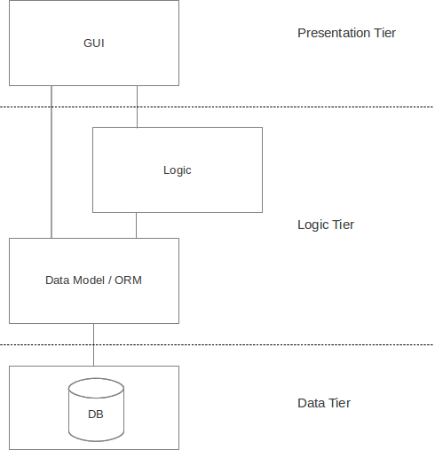
The platform’s applications can work in the following configurations:
-
2-tier solution is the Java SE desktop client connects directly to the database server. This scheme is recommended for relatively simple applications, which do not require any application server.
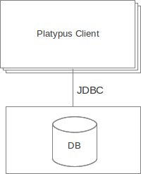 * The 3-tier solution with deskop client and Platypus Application Server (PAS). This server is a lightweight non-J2EE Java application server. The custom binary protocol is used to transmit data. The application server, in turn, interacts with a database server.
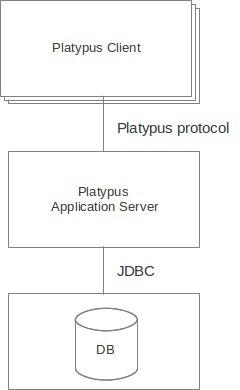 * The 3-tier solution with a Java EE compatible server to host the platfroms server components. The deskotp client or HTML5 browser connects to the servlet container or J2EE server using HTTP/HTTPS protocol. In this case, an application’s data source resources are managed by the Java EE container.
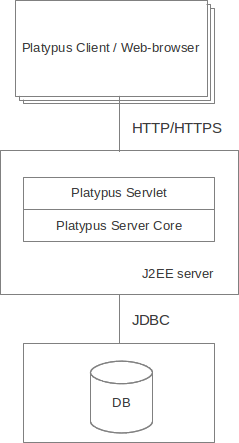
3-tier configuration has a number of advantages as compared with 2-tier one:
-
Improved security, as the client has no direct access to the database and database request text is not transmitted via network.
-
Improved performance, as business logic is executed on the server.
-
Better system maintainability.
-
Application is more scalabile.
-
The ability to use HTML5 web browser as a client when using J2EE servlet container or application server.
In case of no-server 2-tier configuration the presentation tier and logic tier operate at Java SE desktop client. In case of 3-tier server configuration the presentation tier operates in the client, either at Java SE desktop client or HTML5 browser and the logic tier runs on application server.
Development steps
To develop an application iteratively perform the following steps:
-
Specify datatbase structure using the database structure diagrams visual editor.
-
Write the queries and specify theirs parameters. If required, implement the queries for updating and adding data in SQL language (it is not needed in general, because data inserts/updates/deletions in most cases can be completed automatically by the data model).
-
Implement the application logic as JavaScript modules. Specify the module’s data model using visual tool. Write the JavaScript code, for example to implement the business-logic.
-
Implement the application user interface as forms using visual tool. Specify the form’s data model. Create the form’s layout using the visual editor. Write JavaScript code responsible for the user interface.
-
Implement reports using the reports tool. Specify the report’s data model. Create the report template using the visual editor. Write JavaScript code if some non-standard data processing required.
JavaScript module
Module is a JavaScript file containing the constructor function. Modules contain data model responsible for data access.
Modules can be executed both under JVM in a client and server on Mozilla Rhino engine or in a browser.
New module creation
To create a new module, perform the following actions:
-
Select New in the parent directory context menu, or select the parent directory and click New Filе in the main menu, or click New File on the toolbar, or use a corresponding shortcut.
-
Select Module type in the context menu, or select Choose file type Platypus application elements Module on the wizard first step and click Next.
-
Enter the name of a new application element in the Name field and click Finish to create it, or click Cancel to cancel.
JavaScript code editor
You can edit the module code in the JavaScript code editor. To open the application element editor, double-click an application element in the project tree.
To edit the JavaScript code:
-
Open the Source tab of the module editor.
-
Change text in the JavaScript code editor.
-
Use the code completion for field names and functions of objects and modules.
-
Use automatic transition to declarations of variables, functions, and to the functions of other modules; to do this, click a module ID or function while holding down the Ctrl key.
-
Use context menus and shortcuts to use built-in editor functions.
-
Save the application element by clicking Save All on the Platypus Application Designer toolbar or by using the Ctrl S keyboard shortcut.
Note
Use the editor’s context menu Format menu item to format the JavaScript code automatically.
If necessary, configure the code editor parameters; to do this:
-
Select the following main menu items: Tools Options.
-
In the Options properties dialog, select the Editor tab.
To configure auto completion modes, go to the Code Completion tab and enable or disable corresponding options.
Module constructor
Using modules allows you to manage the complexity according to the object-oriented programming principles.
Module is an equivalent of a class in other programming languages, such as in Java or С++.
Every module contains a constructor function. This function is used for module’s instanses creation.
Constructor function can have a header, which is represented as a comment in the JsDoc format and is located at the top of the module text.
Example of a module with a header:
/** * Module description goes here * * @module * @rolesAllowed admin * */ function ModuleConstructor(p) { ... } function otherFunction() { ... }
If a JavaScript file contains exactly one top-level fucntion, this
fuction is considered as a module constructor, otherwise the module
constructor must be marked with the @module annotation.
In addition to the @module annotation, a header may contain the module
description, annotations for defining security constraints and other
JsDoc annotations.
Specify module instance methods:
function ModuleA() { this.somePublicMethod = fucntion(p) { //instance method ... } }
Module instance methods are available for the client code.
Add module scope methods and fields:
function ModuleB() { var a, b, c;//private fields this.somePublicMethod = function(p) { //instance method ... } function somePrivateMethod() { //scope function ... } }
Create or get a module instance by the following ways:
-
Create an instance of the module with the help of the
newkeyword, using a module constructor, for example:var moduleInstance = new ();
where `
` is a module constructor. -
Create an instance of the module with the help of the
newkeyword using specialModuleconstructor, for example:var moduleInstance = new Module();
where `
` is the module constructor name string, for example,"WebModule"; * Get a module instance from the modules pool usingModulesobject:var moduleInstance = Modules.get();
where `
` is the module constructor name string. -
Create a proxy stub for the server module, to invoke the server code on the application server:
var moduleInstance = new ServerModule();
where `
` is the module constructor name string, the server moduleshould be marked with the
@publicannotation to enable access from the external client code.
To call the module’s instance method, use the following structure, for example:
var result = moduleInstance.getResult(10);
Dependencies resolving
When executing the code on a application server or on a desktop client, all application modules and other elements are loaded on demand.
In a web browser, all application elements, on which initial application element depends, are loaded during the process of automatic dependencies resolution.
Automatic dependencies resolving works as follows:
-
The source code is analyzed and expressions of the following types are searched for the following expressions:
new ()new Module("")Modules.get("")new ServerModule("")new ()new Form("")new ()new Report("")new ServerReport("")where ModuleName, FormName and ReportName is the name of the module, form and report what are in fact a special kinds of a module. * Application elements with the specified names are loaded or server proxies for server modules/reports are generated. * The process continues recursevly for the loaded modules, except for the server proxies.
If it is not necessary or not possible to resolve the dependency
automatically, for example, if you want to determine the called module
in a dynamic manner, you can use the manual dependencies resolving with
require.
Use require([], ) global function, where param is the module
constructor name, or the relative path to the JavaScript file in the
application, or an array of these elements, callback is a function,
which will be called when all the specified modules are downloaded and
executed.
Note
Don’t use manual dependencies resolving against a server modules. It will lead to attempt to download the module body on the client.
Example of using manual dependencies resolving is as follows:
var moduleName1 = "Module1", moduleName2 = "Module2"; require([moduleName1, moduleName2], function() { var m1 = new Module(moduleName1); m1.bar(); var m2 = new Module(moduleName2); m2.foo(); });
The following example shows how to use the require function for
loading the module by its constructor name as well as the plain
JavaScript file by specifing its path:
require(["Module1", "localLib.js"], function() { //Platypus module var m1 = new Module("Module1"); m1.bar(); // Constructor LibObject is defined in localLib.js var o1 = new LibObject(); });
Relative paths are counted off from the src directory of the Platypus
application. If the JavaScript file path matches the Platypus module
identifier name, the Platypus module will be loaded.
The require function also has a synchronous variant, which can be used
in the server code. In this case, if you don’t need to maintain
compatibility with the client’s code, the second parameter is optional:
require("localLib.js"); // LibObject is defined in localLib.js var obj = new LibObject();
You should pay attention to the combination of automatic and manual
dependencies resolution. For example, in the following snippet it is not
necessary to call the require function:
var moduleName1 = "SampleModule1",
moduleName2 = "SampleModule2";
require([moduleName1, moduleName2], function() {
var m1 = new SampleModule1();
m1.bar();
var m2 = new SampleModule2();
m2.foo();
});This code leads to the automatic dependencies resolution regarding to the SampleModule1 и SampleModule2, as calls of their constructors are present in the code in explicit form.
On the other hand, creating modules in the var m = new SampleModule1()
form is preferred. In order to avoid automatic resolving of
dependencies, explicitly specify module constructor names in the form of
string literals the require function parameter:
require(["SampleModule1", "SampleModule2"], function() {
var m1 = new SampleModule1();
m1.bar();
var m2 = new SampleModule2();
m2.foo();
});This method of calling the require function excludes these explicitly
specified constructor names in the first parameter from the automatic
dependencies resolution. So, SampleModule1 and SampleModule2 will be
loaded only when calling the require, rather than before starting the
application.
Security
The executable module code is a resource, access to which can be restricted on the basis of the roles. When a user, who has no rights to execute some code, tries to call it, a security exception is thrown.
In order to restrict access to the entire module code, add the
@rolesAllowed… annotation to the module header. Specify roles,
allowed to access the module code execution, in the @rolesAllowed
annotation, dividing them by spaces. If the annotation is omitted,
access to the module is granted to all users.
You can restrict access to the module code on the level of an individual
function. To do this, add the @rolesAllowed annotation to the
function’s JsDoc. The restrictions on the function level have a higher
priority than the module level restrictions. For example, only a user
with the role2 role from the following example will have access to the
f2:
/** * @module * @rolesAllowed role1 role2 * */ function ModuleC { var self = this; /** * @rolesAllowed role2 */ this.f2 = function() { //... } }
Use principal property to get access to the information about the
current user in the executable code. The principal property is
read-only. The object of information about the user contains the name
property, i.e. the name of the current user, and the `hasRole()`method,
which allows you to check if this user has any role:
Logger.info('Current user: ' + self.principal.name); if (self.principal.hasRole('Manager')) { // Some operations allowed only to managers ... }
Use logout() global function, where `
` is a function, which will be called after the session isterminated. Open forms will be closed and the user will see the login and password entering form.
Resources loading
The platfrom runtime enables loading of resources in the form of binary
data and text. Resources may be loaded using their relative paths or
URLs. Relative paths are counted off from the src root directory of
the application. Use the Resource object methods for resource loading.
To download a binary resource, use the Resource.load(, ) method, where
path is a relative path or URL, callback(obj) is a function, which
will be called after the resource is loaded, obj is an array of bytes
of the downloaded resource for the server code and Platypus Client or an
object of the ArrayBuffer type for the HTML5 browser:
//Loads binary resource Resource.load("res/pict.bin", function(obj) { ... })
You can use a synchronous version of this method with a single parameter in the server code or in the code, which is executed in the Platypus Client. In this case, the method itself will return an array of bytes of the downloaded resource:
//Loads binary resource synchronously var obj = Resource.load("res/pict.bin"); ...
To download text, use the Resource.loadText(, , )) method, where
path is a relative path or URL, encoding is the name of the text
encoding, callback(txt) is a function, which will be called after the
resource is loaded, txt is the downloaded text:
//Loads text Resource.loadText("res/res.txt", "UTF-8", function(txt) { Logger.info(txt); })
You can use a synchronous version of this method with one or two parameters in the server code or in the Platypus Client code. In this case, the method itself will return an object of a downloaded resource string:
//Loads text synchronously var txt = Resource.loadText("res/res.txt", "UTF-8"); Logger.info(txt);
Note
Resource.loadText("resourceUrl", function(){}) loads text without an
encoding specified. When resource is loaded via http, encoding comes
from http headers and it is utf-8 otherwise.
To get the absolute path to the application directory, use the
Resource.applicationPath read-only property. If an application is
deployed into database, this property returns null:
//Reads the application's path Logger.info(Resource.applicationPath);
Data model
Data model is a module’s persistence manager. It provides access to the data obtained from a relational database or any other data source. Data model allows you to perform the following tasks:
-
Fetch data from the data source(s) to the entities datasets.
-
Automatically requery/filter data, according to the inter-entities links.
-
Save changes made to the entities data (insert, update and delete).
-
Entities data change events handling with JavaScript.
Data model consists of entities and links and is configured using the visual editor.
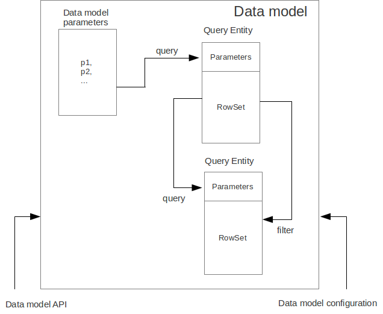
Data is stored in the form of JavaScript objects within an etnity’s array.
The following types of entities can be used in the data model:
-
Regular entity is created using a module implements special datasouce interface methods or a query application element.
-
Table entity is a special query entity, which selects all data from the table. It is created automatically by runtime. A table entity can be used on two-tier configurations with direct connection to a database.
Each entity can have parameters and contains a dataset with predefined fields according to the data schema defined by the module or query, on the basis of which the entity is created.
The parameters of the data model are contained in the special entity named Parameters, which is present in each data model and does not have a full-featured dataset.
In general, a dataset is an array of objects, each of which corresponds to a tuple in the query results.
There is a cursor for each dataset. The cursor can point to some row in the dataset and determines the current item of this set. Also the dataset cursor can point to the positions "before the first row" and "after the last row". The entity cursor position can affect to the linked entities data.
Entity fields and parameters may be connected by links. The following link types are used in a data model:
-
Query link—if the target field of connection is an entity parameter field.
-
Filter link—if the target filed of connection is a entity data field.
-
Link defined by the database table external keys.
Query link requeries the target entity’s dataset according to the parameter value change. The new parameter value is determined according to the source point of the link. Both dataset field’s current value or a parameter value can be used. When the value at the link source changes, new data is requested from the database and reoladed in the target entity.
Note
When a module runs in browser, data comes asynchronously from the network. When a module runs on desktop client and on application server, data comes synchronously. It is recommended to build the client side of applications as if data were obtained asynchronously in all cases. It will allow to avoid compatibility issues when transferring the client side of applications to the browser.
Filter link provides the restricted rows view of the target entity dataset according to the new filter value. The new filter value is determined according to the source point of the link. A dataset field’s current value or a parameter value can be used. When the value at the link source changes, no data is fetched from the database.
Foreign key link is defined by a database table foreign keys. This kind of link is created automatically, if a dataset contains fields included to such foreign key. This type of link does not affect the content of the datasets and is used to generate inter-instance connections between instances of entities. This is done via new properties, wich are created while data fetching. The link of this type is visually shown as a dashed line on the data model diagram.
Note
To get inter-instance connections work, primary and foreign keys are required. Such keys may come from database structure definitions or from schema definitions in a JavaScript datasource module.

The figure shows an example of operation of filter and query links for
the three entities in the data model. In the Persons entity, a cursor
is pointing to a string corresponding to a person named Mike.
When initializing a module, data corresponding to the input parameter values is loaded into the model by default, then every change of input parameters leads to a cascade update of all datasets, which are directly or inderectly associated with the modified parameter.
For any dataset you can determine any number of incoming and outgoing links of both types. When building connections you should consider the following restrictions:
-
Links must not create circular references.
-
Links fields and parameters of the souce and the target entities must match by its type: the types of connected fields and parameters must allow the mutual conversion of values. For example, it is possible to connect field if there’s a number specified for the connection on the source, and a string specified the connection on the target, it is quite possible, since there is a possibility of an unambiguous conversion of a number to a string, but not vice versa.
Batch change of the model input parameters is also possible, in this case, data is updated only after changing all the required parameters.
Added, deleted and changed datasets of these entities objects are saved to the database or sent to the application server for subsequent saving when calling the save function of the data model object.
The data model object is represented in the module constructor by the
this.model object.
Create an alias variable for the data model object, in the following code snippets we will use this model alias object:
function ModuleD() { var model = this.model; //... }
-
Set the data model parameters to update the data of the linked entities.
-
Get access to data for data processing, analysis, and so on.
-
Use inter-instances connections to process the data in ORM manner.
-
Use the cursor to move through the data rows.
-
Specify entity event handler functions and write their JavaScript code.
-
Alter, remove or add objects in the entity and allow the data model to save the changes.
-
Read entity fields metadata for special needs.
To force updating of all data model entities, call the requery function
of the model object:
model.requery(onSuccess, onFailure)
where onSuccess is the handler function for refresh data on success
event (optional), onFailure is the handler function for refresh data
on failure event (optional).
Data model editor
Data model is configured using the visual editor.
For navigating to a data model elements, it is convenient to use a data model inspector panel. In the data model inspector, entity and model parameters are presented in the form of a tree structure. You can select an entity or a connection both in the visual editor and in the data model inspector. Mutual positioning of the model data inspector and its diagram is possible.
To add a table entity to the data model, perform the following steps:
-
Select the Datamodel tab of the module’s editor.
-
Select the Add query / Add table Add table menu item on the editor toolbar, or use the Ctrl Shift Insert shortcut.
-
Select the table from the list in the table selection dialog, if necessary select a schema from the drop-down Schema list; the Default button sets the default schema for the application; use the search option by clicking Find, if necessary.
-
Click OK add the table or click Cancel to cancel.
-
If necessary, move the table on the model diagram to the right place.
-
Save the application element by clicking Save All on the main toolbar or by using the Ctrl Shift S keyboard shortcut.
To add an entity based on an existing query to the data model, perform the following actions:
-
Select Add query / Add table Add query on the editor toolbar.
-
Select an application element of the Query type in the dialog.
-
Click OK to add the query or click Cancel to cancel.
-
If necessary, move the query on the visual editor diagram to the right place.
-
Save the application element by clicking Save All on the main toolbar or by using the Ctrl Shift S keyboard shortcut.
Note
Drag an existing query or a module from the application elements tree on the project panel to the visual editor diagram of the data model to include it into the editable data model.
An entity object and its data is available from module’s JavaScript code. When you add a new entity, its name will be specified by default, according to the query, or module consturctor name or a table name in the database. To change the name of the entity, perform the following steps:
-
Go to the Datamodel tab.
-
Select the corresponding entity on the data model diagram or in the data model inspector.
-
In the Properties editing window specify the name value in the name field; entity name is case-sensitive and must meet the requirements for the JavaScript identifiers.
-
Save the application element by clicking Save All on the main toolbar or by using the Ctrl Shift S keyboard shortcut.
To add entity dataset events handlers, perform the following actions:
-
Go to the Datamodel tab.
-
Select the corresponding entity on the data model diagram or in the data model inspector.
-
On the Properties panel select the Events tab and specify the name of the handler for the corresponding event.
-
Go to the Source editor tab and write the JavaScript code for the event handler.
-
Save the application element by clicking Save All on the main toolbar or by using the Ctrl Shift S keyboard shortcut.
After adding the event handler function, a protected code section will be added to the code editor:
function rowDeleted() { //TODO add your handling code here: }
To remove an entity event handler:
-
Go to the Datamodel tab.
-
Select an entity in the data model inspector or on the diagram.
-
On the properties panel select the Events tab for the event and delete the event handler name.
-
Save the application element by clicking Save All on the main toolbar or by using the Ctrl Shift S keyboard shortcut.
Note
If the Properties panel is not displayed, enable this panel. To do this, select Window Properties in the Platypus Application Designer main menu.
To delete an entity from the data model, perform the following actions:
-
Select an entity in the data model inspector or on the diagram.
-
Click Delete on the editor toolbar.
-
Save the application element by clicking Save All on the main toolbar or by using the Ctrl Shift S keyboard shortcut.
To add data model parameters:
-
Click Create new field/parameter on the fields editing tab toolbar to add a parameter or press the Insert key.
-
Change the parameter properties in the Properties editor window.
-
Save the application element by clicking Save All on the main toolbar or by using the Ctrl Shift S keyboard shortcut.
Data model parameters have the following properties:
-
Name is the name of the parameter.
-
Description is the description of the parameter.
-
Type is the type of the parameter; select the type of the parameter from the drop-down list.
-
Type Name is the name of the data structure type, the field is available for input if the Structure field type is selected.
-
Size is the length or accuracy of the field.
-
Scale is the scale of the field.
-
Nullable property selects, weather the
NULLvalue is available for the field.
To edit the data model parameter properties, perform the following actions:
-
Select a parameter on the diagram or in the data model inspector.
-
Edit the properties of the parameter in the Properties window.
-
Save the application element by clicking Save All on the main toolbar or by using the Ctrl Shift S keyboard shortcut.
To delete a data model parameter, perform the following actions:
-
Select a parameter on the data model diagram.
-
Click Delete on the parameter editing tab toolbar or press the Delete shortcut.
-
Save the application element by clicking Save All on the main toolbar or by using the Ctrl Shift S keyboard shortcut.
To add a query or a filter link between two entites:
-
Move the parameter to the field of an entity, with which you want to connect this parameter. The connection will be displayed as a line with an arrow between fields or parameters of the entity.
-
Save the application element by clicking Save All on the main toolbar or by using the Ctrl Shift S keyboard shortcut.
Note
Query link type in the visual editor is highlighted by purple. Filter link is highlighted by black. The link target field is shown by an arrow.
To delete a link, perform the following actions:
-
Select the link to remove.
-
Click Delete or use the Delete key.
-
Save the application element by clicking Save All on the main toolbar or by using the Ctrl Shift S keyboard shortcut.
To edit a foreign key link properties, perform the following actions:
-
Select a dashed link.
-
Select Scalar and collection properties menu item from the foreign key link context menu.
-
In the dialog specify Scalar property name and Collection property name fields.
-
Save the application element by clicking Save All on the main toolbar or by using the Ctrl Shift S keyboard shortcut.
To zoom-in or zoom-out the data model visual presentation:
-
Click Zoom In to scale up the data model presentation in the editor; click Zoom out to scale it down.
To use the search function on the data model diagram:
-
Click Find to open the search dialog in the data model editor.
-
Enter the search line, select fields to be used for searching: Datasets, Fields, Params, and also check the necessary options: use the Whole words option to search for the whole words. Use the Match case option to perform the case-sensitive search.
-
Click Next and Previous to go to the next or previous search result.
-
Click Close to close the search dialog.
Data model parameters
Use the data model parameters to fetch specific data to the data model.
Data model parameters object is in the model.params property. To set a
new value to the data model parameter:
model.params. = newValue;
where `
` is the corresponding parameter name, and `newValue` is a newvalue of the parameter (literal, variable, or expression).
Below you can see a piece of code, the execution of which will result in
loading the new model entity data by assigning a new value to the
documentID parameter:
model.params.documentID = 1; // Changes data model parameter
Each change of any data model parameter leads to the automatic update of data of the model entities, which are directly or indirectly connected with it.
Note
Datasets in the model are updated only if the value of the model parameter was changed. To force updating of entity data, use the requery method.
It is often necessary to change some parameters before updating data. To
do this, use the beginUpdate and endUpdate methods of the params
object:
model.params.beginUpdate(); try { // Update parameters here, // for example: // params.documentID = 1; // params.language = 'en'; } finally { params.endUpdate(); }
Entities
Data model entities are available as the data model object’s properties:
model., where `
` is the script presentation of an entity.Entities may have its own parameters and can be updated independently from the other model entities.
To access entity parameters, use the params entity property:
var entityParams = .params
where `
` is an object of the corresponding entity.To access the specific parameters, use properties of the model..params
object with names, which match the entity parameter names:
var entityParam = model..params.
where `
` is an entity object,`
` is the property of the corresponding parameter.To set the parameter value, assign a new value to it:
model..params. = newValue;
where newValue is a new value of the parameter.
Setting a new value for a entity parameter doesn’t result in automatic update of the dataset.
To update entity data and related entities, use the execute, function. New data will be loaded only if the entity parameter values were changed:
.execute(onSuccess, onFailure);
where `
` is an entity object, `onSuccess` is the handler function forrefresh data on success event (optional) and onFailure is the handler
function for refresh data on failure event (optional).
To force the update of entity data and related entities, use the requery function:
.requery(onSuccess, onFailure);
where `
` is an entity object, `onSuccess` is the handler function forrefresh data on success event (optional), onFailure is the handler
function for refresh data on failure event (optional). Callback
functions are called when the database request is executed and its
results come to the client over the network.
Handler of the onRequeried entity event will be called in any case,
regardless of the method of calling the requery function.
Note
Update of entity data does not cancel the data changes made in the entity dataset earlier, so after saving the model these changes will be applied to the database. Data changes are reset only after saving the entire model.
To access to the entity’s data, refer to the entity dataset as a regular JavaScript array:
var item = model.[]
where `
` is an entity, `
` is an index of the array element within the `0...length - 1`range.
An array element is an data row instance, which was obtained as a result of executing the query in the database. To access row’s fields, refer to them by name:
var propValue = [].
where `
` is an object of the corresponding entity, `
` is an index of the array element within the `0...length - 1`range, `
` is a property of the entity object having the same name as therowset field.
The following example shows the process of enumerating document rows in
the documents entity:
var documents = model.documents; // Logs all documents names for (var i = 0; i < documents.length; i++) { logger.info(documents[i].NAME); }
If an external key link is established between two entities, you can get access to the data of the connected entity by using data instance property having the same name as the connected entity. This properties are generated during ORM resolution. If the entity’s underlying database table contains an foreign key reference, the corresponding property represents the connected entity.
var propValue = model.[]..
where `
` is the name of an entity, which contains the external keyreference, `
` is an index of the array element within the `0...length - 1`range, entityName2 is an entity containing the field, which is referenced by the external key, `
` is a property of the entity object having the same name as thequery results field.
If the entity contains a field, which is referenced by the external key, the property contains an array of the connected entity objects:
var propValue = model.[]..
where `
` is an entity, which contains the external key reference, `
` is an index of the array element within the `0...length - 1`,range entityName2 is an entity containing the field, which is referenced by the external key, `
` is an index of the connected object array element, `
` is a property of the entity object having the same name as thequery results field.
Change for a foregn key link scalar and collection properties if required. The changed values will be used as a properties names in the correspondent entities.
Cursor API
To get access to the dataset row pointed out by the entity cursor use
the model..cursor property, for example:
var currentValue = model..cursor
where `
` is a corresponding entity, `
` is a property of interest.The cursor is defined by position in the entity data array. In addition to pointing to some object, the cursor can point to the position before the first object and after the last object. In this case cursor property is null.
After loading or filtering dataset the cursor is placed on the first object of the entity’s data array.
To move the cursor over the data array, use the beforeFirst, afterLast, first, next, prev, last, and pos entity’s methods.
| Function | Description |
|---|---|
|
Sets the cursor to the position before the first object. |
|
Sets the cursor to the position after the last object. |
|
Sets the cursor on the first object. |
|
Sets the cursor on the last object. |
|
Sets the cursor on the next object. |
|
Sets the cursor on the previous object. |
|
Sets the cursor to the specified position, where index is
the row index |
|
Sets the cursor on the specified object, where obj is a row object. |
To get information about the cursor position, use the bof, eof methods
and the rowIndex entity property.
| Function/property | Type | Returned value |
|---|---|---|
|
Boolean |
true, if the cursor points to the position before the first object. |
|
Boolean |
true, if the cursor points to the position after the last object. |
|
Number |
The current position of the cursor. |
Use the rowIndex property to move the cursor to the specified
position.
The following example uses cursor moving control functions to enumerate
documents entity objects and output document names:
model.documents.requery();//Cursor is on the first object while (!model.documents.eof) { Logger.info(model.documents.cursor.NAME); model.documents.next(); }
To check for instances of data in the entity data array, use its empty
property: model..empty.
The empty property is true if the entity data array is empty, and
false otherwise. For example, the following snippet outputs a message
into the log, if the documents entity data array is empty:
model.documents.empty && Logger.info('Documents is empty.');
Saving data
Module’s data model provides automatic tracking of data changes. Data changes can be saved only as a part of entire model.
To edit, insert, or delete data, perform the following actions:
-
Edit, insert, or delete an object from the entity data.
-
Call the save method of the model.
To obtain access to the entity arbitrary objects, use the syntax of referring to an array element:
model.[]. = ;
where `
` is an entity, entityName[i].propName is an object propertywith the specified index in the entity data. `
` is an expression for the new value.To change the appropriate property of the entity’s cursor, use the following way:
model. = ;
where `
` is an entity, `
` is a property in the current cursor position in the entitydata, `
` is an expression for the new value.To save changes the data model changes, use its save method:
model.save(onSuccess, onFailure);where onSuccess is the handler function for an event of successfull saving of data (optional) and onFailure is the handler function for a save data on failure event (optional).
To insert a new object to a dataset:
-
Add a new object to entity dataset.
-
Call the save method of the data model.
To insert a new object into a dataset, use the insert or push entity functions.
Call the insert function to insert a new object into the entity data. If
necessary, pass "key-value" pairs as parameters to this function. Here,
a key is the .schema. entity property, and a value is the value of
this property:
model..insert();
model..insert( model..schema., , model..schema., //... );
Call the push function to insert a new object in the entity data — this function is a standard method of inserting a new element into the JavaScript array:
model..push();
If necessary, pass the JavaScript object, the property names of which match the names of properties in the entity objects, as a parameter to the function. Their values will be set as values of the new object properties:
model..push( { : , : });
When using the insert function, as well as when using the push function, the cursor will point to a new object.
After inserting, the new object will have the following properties:
-
An identifying property gets the generated value, if a value was not explicitly assigned to this property when inserting.
-
Properties, which form a part of the filter (if any), get values of the corresponding filtration keys; a filter can be applied by the model filtering connections or by the custom code.
-
Properties belonging to the "key-value" get the transferred values.
-
Other properties will be set to
null.
Example of code for inserting a new object into the documents entity:
model.documens.push({ ID:101, NAME:'New document name'}); model.save();
To delete an object, use the deleteRow or splice entity functions.
Call the deleteRow function without parameters to delete the current object, i.e. the object, which the cursor is pointing to.
model..deleteRow();
Pass an index of the object, which you want to delete, as a parameter to the deleteRow method:
model..deleteRow();
where `
` can take on `1...length` values.Alternatively, pass the object to delete as the parameter of deleteRow method:
model..deleteRow();
where `
` is the one of the dataset row items.Use the splice function to delete an object from the entity data by passing an index and a number of elements to be deleted as arguments:
model..splice(, );
where `
` is an entity, `index` is an index of the entity data arrayelement. index can take on a value within the 0...length-1 range, `
` is a number of elements to be deleted.Example of deleting the current object from the documents entity and
from the database:
// Removes first element model.documents.splice(0, 1); model.save();
To remove all objects from the entity data, use the deleteAll entity function:
model..deleteAll();
Example of deleting all objects from the documents entity and from the
database:
// Removes all elements model.documents.deleteAll(); model.save();
Calling save function results in saving changes and commiting the
transaction.
Calling save function may lead to an exception, for example, if saved
data are inconsistent with the database schema. In this case data are
not saved to the database. To handle this exception, use the
try-catch-finally statement:
try { model.save(); } catch (e) { model.revert(); Logger.error('Save data error: ' + e); }
After handling the error, you can try to correct the cause of the problem and re-call the save function.
Use model’s revert method to revert model data changes. After this
method call, no data changes are avaliable for save() method, but the
model still attempts to commit. Calling save() on unchanged model
nevertheless leads to a commit.
Search API
Search operations can be performed after the data model loads its entities' data.
Search is performed in the model and doesn’t send new requests to the database neither changes the data.
To find an object by its identifier, use the findById entity method by passing a key value to it:
var item = model..findById();
where `
` is an entity, `
` is an expression for the search key.If nothing is found, the findById function returns the null value.
Example of code for searching for a document by its identifier and displaying its name in the log:
var documentId = 101; var document = model.documents.findById(documentId); if (document) { Logger.info('Document name is ' + document.NAME); }
To perform search by arbitrary properties of objects, use the find entity’s function. Pass the "key-value" pairs corresponding to the property and search value as parameters of the find function. The search is performed by checking the equality of the entity object property values and values to search for.
var items = model..find( prop1, propValue1, prop2, propValue2 //... //propN, propValueN );
where `
` is an entity, `
` — is an entity property in the form of `.schema.`; `
` — is a value to search for.Note
findById и find functions are searching for objects using prepared hash table by corresponding properties and don’t enumerate the row objects. Therefore, it is recommended to logically separate the code for searching and changing data, as after any change of data prepared hashes are marked as obsolete, and are rebuilded when you attempt to perform the search next time.
To get an object-property of the entity, use entity metadata:
var field = model..schema.;
where `
` is an entity, `
` is the name of the corresponding property.Search operation returns an array of found objects or an empty array if nothing was found.
This code snippet illustrates search documents by their names and by the set flag:
var documentName = 'Document 1'; var isChecked = true; var documents = model.documents; var foundDocuments = documents.find( documents.schema.NAME, documentName, documents.schema.CHECKED, isChecked, ); for(var i=0; i<foundDocuments.size(); i++) { var foundDocument = foundDocuments[i]; Logger.info(foundDocument.DESC); }
Filter API
Filtering operations can be performed after the data model loads its entities data.
Data filtering is performed in the model and do not cause sending new requests to the database neither changes the data model data.
You can specify filtering rules for any entity. Filtering rules will be applied every time the data is loaded. Data rows, which failed to pass the filtration condition, are not lost, but becomes invisible to the application code.
To create a filter, use the createFiter entity function and pass entity schema properties, by which the filtration to be performed, as parameters:
var filter = model..createFilter( model..schema., model..schema., //... model..shema.);
where `
` is an entity,` model..schema.` is an entity field metadataproperty.
To apply a filter to data, use the apply function and pass filters values in the same order, in which filtered fields were specified:
filter.apply( filterValue1, filterValue2, //... filterValueN);
where filterValueN is a value, by which the corresponding property
will be filtered.
To cancel the filter, call the cancel filter function:
filter.cancel();
Note
You can specify only one filter for each entity at a time. When you apply a filter to the already filtered dataset, the previous filter is replaced by a new one.
Example of using data filtrating and enumeration of results:
//Set filter values var status = 1; var checked = true; var documents = model.documents; //Create and apply filter var filter = documents.createFilter( entity1.schema.STATUS, entity1.schema.CHECKED); filter.apply(status, checked); // List filtered data documents.beforeFirst(); while(documents.next()) { Logger.info(documents.NAME); } // Cancel filter filter.cancel();
Sort API
To sort datasets objects according to some criteria use entity sorting operations. Sorting can be performed after entity data is loaded.
Data sorting is performed in the model and do not spawn new requests to the database neither changes the data model data.
Entity data can be sorted by several fields using the sorting rules.
To specify the rules, create the sorting objects. To do this, use createSorting entity’s function. Pass pairs defining the sorting order and a property, by which sorting should be performed, as the parameters to this function:
var sorting = model..createSorting( model..schema., , model..schema., , //... model..schema., );
where `
` is an entity, `.schema.` is a property, by which sorting ofdata of the entity, the createSorting function of which is called, will
be performed; ascDescN is the boolean ascending sorting order
attribute wich is equals true or for the descending sorting order is
equals to false.
To sort data, use the sort entity function passing a sorting object as a parameter to this function:
model..sort();
where `
` is a sorting object.Example of sorting entity data by name and reverse sorting by flag:
var documents = model.documents; //Create sorter var sorter = documents.createSorting( documents.schema.NAME, true, documents.schema.CHECKED, false); //Sort objects model.entity1.sort(sorter);
To define the specific comparison logic, use an alternative version of the sort function. To do this, pass a function, which implements the comparison of two elements, as a parameter:
model..sort(sortingFunction);
where `
` is an entity, sortingFunction is a function, which takes twoobjects as parameters and compares them. The comparison function returns a negative integer, if the first object is smaller than the second one, returns 0, if they are equal, and returns a positive integer, if the first object is greater than the second one.
The following example shows the process of sorting entity data using an anonymous comparison function. Sorting is performed by the length of the document name:
module.documents.sort(function(doc1, doc2) { var length1 = doc1.NAME != null ? doc1.NAME.length : 0; var length2 = doc2.NAME != null ? doc2.NAME.length : 0; return length1 - length2; });
Entity events
To implement some logic to react to the data events specify entity events handlers functions. To create these handler functions assign functions to entities' properties or use data model editor.
Use an event handler function as follows:
function EntityOnEventHandler(evt) { //..code to handle this event }
Entity data events list is given in the table below:
| Event | Event type | Description |
|---|---|---|
|
|
Is called after changing the dataset object |
|
|
Is called after removing an object from the dataset |
|
|
Is called after inserting a new object into the entity dataset |
|
|
Is called after filtering the entity dataset |
|
|
Is called after re-requesting the dataset data, including the first request during the module’s startup |
|
|
Is called after changing the cursor position in the entity dataset array |
|
|
Is called before changing the rowset object |
|
|
Is called before removing an object from the dataset |
|
|
Is called before inserting an object into the dataset |
|
|
Is called before moving the cursor over the entity dataset |
The events that are invoked before some action are cancelable from the
handler function by returning the false value. That way you can cancel
the following events: willChange, willDelete, willInsert and
willScroll.
EntityEvent is a generic entity object and contains the following
property:
| Property | Description |
|---|---|
|
Event source object. |
Other entity events contain source property as in EntityEvent, as
well as their own specific properties.
ChangeEvent object specific propetries are listed in the following
table:
| Property | Description |
|---|---|
|
Changed property name. |
|
The value before change. |
|
The value after change. |
DeleteEvent object specific propetries are listed in the following
table:
| Property | Description |
|---|---|
|
The deleted object. |
InsertEvent object specific propetries are listed in the following
table:
| Property | Description |
|---|---|
|
The inserted object. |
CursorChangeEvent object specific propetries are listed in the
following table:
| Property | Description |
|---|---|
|
The cursor position index before position change. |
|
The cursor position index after position change. |
Example of using an event handler function for validation:
//Handles willChange event function usersWillChange(evt) { return validateEmail(evt.newValue); } //Simple e-mail validation function validateEmail(email) { var re = /\S+@\S+\.\S+/; return re.test(email); }
Data schema
JavaScript code has access to an entity’s fields metadata. It is possible to read types, names, descriptions of entity properties and parameters, and etc.
To read an entity’s schema, use its schema property:
var entityMetadata = model..schema;
where `
` is an entity, which schema you are interested in.The same data can be obtained using the object-instance of this entity:
var item = model.[];// Gets some item var entityMetadata = item.schema;
where `
` is an entity, `
` is an object's index.To get access to the an entitiy’s property metadata:
var propMetadata = model..schema.;
where `
` is an entity, `
` is the name of the corresponding property.Example of code, which checks if the id property of the documents
entity is an object’s key.
if (model.documents.schema.id.pk) { Logger.info('id is key attribute of entity.'); }
The schema composed of the following properties:
| Property | Type | Description |
|---|---|---|
|
Boolean |
|
|
Boolean |
|
|
String |
Property name |
|
String |
Property description |
|
Boolean |
|
|
Number |
Size of the property value |
|
Number |
Scale |
|
Number |
Accuracy |
|
Boolean |
|
|
Boolean |
|
To get the number of properties in the entity, use the length property
in the entity schema object:
model..schema.length
You can read the property’s metadata by index as an array element:
model..schema[]
where `
` is an entity, and `
` is within the range from `0` to `entityMetadata.length-1`.Below you can find an example of output all properties of the documents entity into the log:
for (var i = 0; i < model.documents.schema.length; i++) { Logger.info(documents.md[i]); }
To read the entity parameter metadata, use the schema property of the
params object of a data model or entity:
var paramsMetadata = model.params.schema;
var paramsMetadata = model..params.schema;
To get access to the metadata of a specific parameter:
var paramMetadata = paramsMetadata.;
where `
` is a name of the parameter.Example of code, which checks if the documentID parameter of the data
model was changed:
if (model.params.schema.documentID.modified) { Logger.info('Parameter documentID was modified.'); }
You can read metadata composed of the following for the parameter:
| Property | Type | Description |
|---|---|---|
|
Number |
Parameter operation mode |
|
Object |
Default parameter value |
|
Boolean |
|
|
Boolean |
|
|
Boolean |
|
|
String |
Name of the parameter |
|
String |
Description of the parameter |
|
Boolean |
|
|
Number |
Size of the property value |
|
Number |
Scale |
|
Number |
Accuracy |
|
Boolean |
|
|
Boolean |
|
To get the number of model parameters, use the length property of the
model parameter schema object:
model.params.schema.length
or just the length property of the model parameters:
model.params.length
To get the number of the entity parameters:
model..params.schema.length
or:
model..params.length
where `
` is an entity.To access parameter metadata by index, call it as an array element:
model.params.schema[]
where `
` is within the range from 0 to `params.schema.length-1`.Below you can see an example of outputting all model data parameters into the log:
for (var i = 0; i < model.params.schema.length; i++) { Logger.info(params.md[i]); }
Dynamic entities
Use model’s loadEntity(queryName)method, where queryName is the name of the query to dynamically create an entity in the data model. The generated entity can be used to read, insert or modify objects:
var docEntity = model.loadEntity("Documents"); docEntity.requery(); //Print all documents names docEntity.foreach(function(doc) { Logger.info(doc.NAME); }); //Change first document's name docEntity[0] && docEntity[0].NAME = "New document"; model.save();
Executing arbitary SQL
In addition to using entities based on a query, data model allows to execute arbitrary SQL code. Using entities based on a query instance have a number of advantages, such as security management or ability to work with the client code. However, if necessary, you can execute arbitrary SQL.
SQL execution is available on a server or on a desktop client wich has a direct connection to a database.
Use the following methods of model:
-
createEntity to dynamically create a new entity.
-
executeSql to execute SQL without any preprocessing.
Use model.createEntity(sqlQuery, dataSourceName) method, where `
` is the query text, dataSourceName is the datasource name(optional) to dynamically create a new entity, which can be used for executing the SQL code. The generated entity can be used to read, insert or modify objects:
var docEntity = model.createEntity("SELECT * FROM Document"); docEntity.requery(); //Print all documents names docEntity.foreach(function(doc) { Logger.info(doc.NAME); }); //Change first document's name docEntity[0] && docEntity[0].NAME = "New document"; model.save();
Use executeUpdate entity method to execute the SQL code, which contains
the INSERT, UPDATE, DELETE or DDL commands:
var e = model.createEntity("DELETE * FROM Document d WHERE d.DOC_TYPE = 1"); e.executeUpdate();
Use executeSql(sqlQuery) model’s method to execute the SQL code, which
contains the INSERT, UPDATE, DELETE commands, where `
` is the query text:model.executeSql("DROP TABLE Document");
Data source module
A module can be used as a data source in other modules data models just like a query.
To create a data source module implement the following instance properties and methods:
-
schemaproperty to represent the data source metadata information. The schema information is repesented as an array of fields elements. For each array element contains the following:nameis the name of the field,entityis the entity name to be used as a reference (optional),descriptionis the field’s description, type is the field’s type (optional),keyis true if the field is a primary key,refis the reference to the other entity’s field. -
fetch()method to query data, where params is an object, with properties as defined in this module’s model’s parameters. -
apply(, )method to save the data, where log is an array represents the log of changes made by clients or server side data driven code to be applied, session is a current user session identifier. For every element of thelogarray useconsumemethod to consume this change log record.
Example of an datasource module usage is as the follows:
/** * @module */ function DataSourceModule(){ var self = this, model = this.model; this.schema = [ {name: "p1", entity: "entity", description: "p1 desc", type: String, key: true}, {name: "p2", entity: "entity", description: "p2 desc", type: String, ref: {property: "referencedPropertyName", entity: "referencedEntityName"}}, {name: "property3Name", entity: "optionalEntityName", description: "p3 desc", type: Number, required: true}, ]; this.fetch = function(aParams) { return [ {p1: "nameA", p2: "descriptionA", p3: 2}, {p1: "nameB", p2: "descriptionB", p3: 20} ]; }; this.apply = function(aLog, aSession) { Logger.info("Log length: " + aLog.length + " Session: " + aSession); aLog.forEach(function(aChange) { aChange.consume(); }); };
Server modules
This section provides information how to use special features of JavaScript modules running on an application server.
Statefull and stateless session modules
A module being created on server is stateful by default. Such module exists in the context of the current user session.
Mark a module with @stateless annotation if you want to make the
module stateless. A new instance of stateless module is created every
time the module is called via a network.
Resident module
Use @resident annotation to make a server module resident. A resident
modules are loaded and instanciated during server startup. Resident
modules are resides in the system session. They are can’t be stateless.
Data validators
Use annotation @validator , ..., where DATA_SOURCEN is a data source
name to enable server side validation. Implement validation logic in the
instance metheod validate(, , ), where log is an array of changes
representing the log of changes made by clients or server side data
driven code to be applied, `
` is a datasource name mentioned in `@validator` annotation(relational datasource or script datasource module name), session is
current user session identifier, the method returns false to stop
validating process (e.g. break validators chain), nothing or true
otherwise or throws an exception if validation fails.
A module with no data sources in @validatior annotation is invoked for
default application datasource.
Server-side validator example is as follows:
/** * @module * @validator DataSource1 */ function ValidatorA(){ var self = this, model = this.model; this.validate = function(aLog, aDatasource, aSession) { return false; }; }
Authorizers and dynamic roles
Use @authorizer annotation to implement dynamic roles assignment for
an arbitary user. The runtime checks all module authorizers as well as
checks the system and if any of them approves the user’s role this role
is considered authorized.
For example:
/** * @module * @authorizer */ function AuthorizerA(){ var self = this, model = this.model; self.isUserInRole = function(aUser, aRole) { return "manager" === aRole && isManager(aUser); } function isManager(aUser) { //Check and return true if a user is a manager.. } }
Tips and tricks
Plain JavaScript Date object is serialized as ISO formatted string in
client/server communication while using browser as a client and J2EE
server as a server. So you should realize that on the client side it may
be JavaScript Date object, but on the server side it will be just
string. May be transferring of timestamp value instead of Date object
will be a good choice.
For example:
// On the server side /** * @module * @public */ function DateChecker(){ var self = this, model = this.model; self.check = function(aPoint, aTimeStamp) { return new Date(aTimeStamp) > 0; } } // And on the client side... /** * @module */ function PeriodCalculatorClient(){ var self = this; self.go = function(){ var calc = new ServerModule("DateChecker"); calc.check((new Date()).getTime(), function(aResult){ Logger.info("Legal date: " + aResult); }); } }
Scripting Java
Calling Java classes from JavaScript code is possible for applications, which are executed in the Platypus client or on the application server in any configuration.
To access the Java packages and classes, use the Java global object. For example, to get access to the File class, use the java.io.File object.
//Deletes file var aFile = new java.io.File("/home/user/afile.txt"); aFile.delete();
For convenience, you can assign an object, corresponding to a Java package or class, to some variable:
var File = java.io.File; //Delete two files var aFile = new File("/home/user/afile.txt"); aFile.delete(); var bFile = new File("/home/user/bfile.txt"); bFile.delete();
Another approach to facilitate working with Java packages is using
importPackage global function, which serves the same purpose as the
import declaration in Java.
importPackage(java.io); var aFile = new File("/home/user/afile.txt"); aFile.delete();
To avoid potential name conflicts, do not use the java name for your
objects and variables.
java.lang.* packages are imported in Java by default, but this is not true for JavaScript, because JavaScript has its own Boolean, Math, Number, Object, and String objects. That’s why import of the java.lang package is not recommended.
External Java libraries are also available in JavaScript code. To use them:
-
Make
.jaror.classfiles of external libraries available for the class loader; when using the desktop client they should be placed in theextfolder; when deploying the application into the J2EE container, they should be usually placed into theWEB-INF/libfolder. -
Use
Packagesobject to access to external packages. Check the following examples:
var sensor = new Packages.biz.altsoft.sensors.NavSensor(); //Gets navigation data var navData = sensor.getData();
importPackage(Packages.biz.altsoft.sensors); var sensor = new NavSensor(); //Gets navigation data var navData = sensor.getData();
Use the importClass global function to import only a single class:
importClass(Packages.biz.altsoft.sensors.NavSensor); var sensor = new NavSensor(); //Gets navigation data var navData = sensor.getData();
Multithreading
Use multithreading in JavaScript for code, which is executed in the desktop client as well on the server code.
To run a function in a separate thread, call the invokeBackground on the function’s object, providing it with the necessary arguments:
function process(p) { // lengthy operation here } //Run it in background process.invokeBackground(0);
Example of code to execute an anonymous function in a separate thread:
(function () { /* some huge work */ }).invokeBackground();
Functions, which are run by the invokeBackground, are executed in the thread pool, for which the maximum number of simultaneous threads is set (10 be default). You can read and changed it using the getThreadPoolSize and setThreadPoolSize global methods:
Logger.info(getThreadPoolSize());// 10 by default setThreadPoolSize(16); Logger.info(getThreadPoolSize());// 16
Variables and properties of JavaScript objects ensure security of reading and writing when accessing them from multiple threads.
If it is necessary to implement the synchronization mechanism
independently, use the Lock, object, which is a JavaScript wrapper for
the java.util.concurrent.locks.ReentrantLock Java class. Refer to Java
documentation for more information.
Warning
Multithreaded programming is rather complex. Incorrectly implemented thread synchronization scheme can lead to hardly detectable errors and unexpected program behavior.
To update the user interface items in the desktop client, create a thread, which is not a GUI thread (a thread of events processing), call the invokeLater function of the function object, which accesses the user interface items, for example:
(function() { var text = complexComputation(); // Update GUI: (funcion() { resultLabel.text = text }).invokeLater(); }).invokeBackground();
Logging
The logging subsystem is built on the base of the Java Logging infrastructure.
To write into the log, use the Logger object, which is a shell for the
java.util.logging.Logger class. The Logger object is also available in
the HTML5 web browser client.
Example of using the Logger object:
Logger.info("info text"); Logger.warning("warning text"); Logger.severe("severe error");
Check the Administration Guide and Java documentation for information about configuring logging in runtime.
Filesystem I/O
To read and write files, use Java API from the java.io.* and other
dedicated packages.
To read and write strings, use readString(, ), and writeString(, , )
global functions, where path is a path to the file, text is a
string, encoding is the name of encoding. The encoding parameter in
both functions is optional and by default is set for the UTF-8 encoding.
Example of using functions for reading and writing strings to a file:
//Read from one text file and write to another var str = readString('/home/user1/Documents/doc1.txt'); writeString('/home/user1/Documents/doc2.txt', str);
Working with XML
To work with data in the XML format, use the script syntax in accordance with the E4X specification (EcmaScript for XML). The E4X technology can be used by the code, which is executed on Rhino runtime engine. For more information refer to the E4X documentation.
Warning
E4X is obsolete. Although it is still supported, its usage is discouraged in new projects. Try to avoid using it.
Preface
SQL query
Query is an application element which defines the SQL expression to be executed in database. A query’s SQL text is preprocessed before execution.
Queries can solve several tasks:
-
Requesting data from the database (
SELECTqueries). -
Definintion of metadata for enabling implicit data modifications commands generation (
SELECTqueries). -
Performing explicit data manupulations (
INSERT,DELETE, andUPDATEqueries).
Note
In most cases, data adding and updating tasks are carried out by the
data model automatically when saving changes. To do that, you can just
specify a query of the SELECT type.
Queries have the following characteristics:
-
Queries support named and typed parameters.
-
SQL clauses are re-used to enable inclusion of some queries into other queries without any duplication.
-
You can edit queries in the visual tool and as SQL text form simultaneously.
-
Query results are translated into entities which can be processed by JavaScript code in ORM style.
-
Query allows you to define the pattern for processing data changes made while the application is running. It is possible to define a list of tables where the changes will be stored.
New query creation
To create a new query, perform the following actions:
-
Select the New item in the parent directory context menu, or select the parent directory and select the New File item in the main menu, or click New File on the toolbar, or use the hotkey.
-
Select the Query type in the context menu, or select Choose file type Platypus application elements Query on the wizard first step and click Next.
-
Select the connections to the database and the schema:
-
Select the default database — click the Default button or a connection to the external database — click the Specific button; select the Db Connection application element using the application element selection dialog.
-
Click Next.
-
-
Specify the name of the new query in the Name field, and click Finish button to create the new application element, or click Cancel to cancel.
After the query creation wizard completes the steps, a new empty query is created.
Query editor
The special editor is used to edit a query SQL and its support configuration files. This editor allows you to perform visual editing of the query and direct modicatation of the SQL source text.
Full-featured editing using the visual editor is possible if the connection to the database is established. If there is no connection to the database, only the SQL source modification is possible.
To determine the general properties, use the query properties panel or add the relevant annotation to the query header manually:
-
Select the root node in the query inspector.
-
Edit the query properties on the Properties panel (if necessary, enable the panel in the Windows Properties global menu).
-
Check the public option to make the query accessible to remote invocation, e.g. on the server and using from the Platypus Client or browser data model.
-
Check the procedure option, if the query will be used to call the stored procedure.
-
Check the manual option, if you want to avoid automatic execution of the query, when it works as a part of the module, report, or form data model, for example, if the query contains the call of the stored procedure,
INSERTorUPDATEexpressions. -
Check the readonly option, if you don’t want to save changes.
-
Select the specific connection to a database if you want the query to be executed againts this database. To assign a query to the default database connection, clear this field.
-
For navigation through the queries, it is convenient to use the query inspector panel. In the query inspector, parameters, tables, and sub-queries are represented as a tree nodes. Parameters and data fields are the leaves.
A table or sub-query can be selected both in the visual editor and in the query inspector.
You can start editing the SQL query from setting the query parameters (if necessary) or from using the visual editor.
To add a database table to the query, perform the following actions:
-
Select the SQL designer tab in the query editor.
-
Select the Add table/Add query Add table item on the editor toolbar, or use the Ctrl Shift Insert shortcut.
-
Select the table from the list in the table selection dialog; if necessary, select the schema in the Schema drop-down list. The Default button sets the default schema for the application, if necessary, use the search function by clicking the Find button.
-
Click OK to add the table, or click Cancel to cancel.
-
If necessary, drag the table to the desired location in the query diagram.
-
Save the application element by clicking the Save All button on the Platypus Application Designer toolbar, or by using the Ctrl Shift S shortcut.
To include the existing query as a sub-query into the query being edited, perform the following actions:
-
Select the Add table/Add query Add query item in the menu on the editor toolbar.
-
Select the Query application element type in the selection dialog.
-
Click OK to add the query, or click Cancel to cancel.
-
If necessary, drag the query to the desired location in the visual editor diagram.
-
Save the application element by clicking the Save All button on the Platypus Application Designer toolbar, or by using the Ctrl Shift S shortcut.
Note
Drag the existing query from the application elements tree of the Projects panel onto the visual editor diagram in order to include it into the query being edited without opening the application elements selection dialog.
To assign the table or sub-query alias, just type it in the text editor or the query or perform the following actions:
-
Select the table or sub-query in the query diagram.
-
On the Properties panel, specify the value in the alias field.
-
Save the application element by clicking the Save All button on the Platypus Application Designer toolbar, or by using the Ctrl Shift S shortcut.
To remove the table or sub-query from the query visual editor diagram, perform the following actions:
-
Select the table or sub-query in the diagram or in the query inspector.
-
Click the Delete button on the query editor toolbar to remove the table or sub-query from the diagram.
-
Save the application element by clicking the Save All button on the Platypus Application Designer toolbar, or by using the Ctrl Shift S shortcut.
Note
If the Properties panel is not displayed, enable this panel; to do that, select the Window Properties item in the Platypus Application Designer main menu.
To add the query parameters, perform the following actions:
-
Click the New field/parameter button on the fields editing tab toolbar to add a field.
-
Modify the new parameter properties; to do that, select its node among the query parameters nodes in the inspector and edit the parameter properties in the Properties window.
-
Save the application element by clicking the Save All button on the Platypus Application Designer toolbar, or by using the Ctrl Shift S shortcut.
Parameter field properties:
-
Name is the parameter name.
-
Description is the parameter description.
-
Type is the parameter type, select in the drop-down list.
-
Type Name is the data structure type name, this field is accessible when the Structure field type is selected.
-
Size is the field length or precision.
-
Mode defines this parameter mode, in the case the parameter will be used as the stored procedure parameter.
Stored procedure parameter modes:
| Value | Description |
|---|---|
|
|
|
|
|
|
|
Parameter operation mode is unknown |
To edit the query parameter, perform the following actions:
-
Select the parameter node from the parameters nodes in the inspector.
-
Edit the parameters; to do that, follow the same steps as when creating a parameter.
-
Save the application element by clicking the Save All button on the Platypus Application Designer toolbar, or by using theCtrl Shift S shortcut.
To remove the parameter, perform the following action:
-
Select the parameter on the parameters panel.
-
Click the Delete button on the parameters editing tab toolbar, or use the Delete shortcut.
-
Save the application element by clicking the Save All button on the Platypus Application Designer toolbar, or by using the Ctrl Shift S shortcut.
The query parameter can be linked to a table or sub-query field, or to a sub-query parameter.
When linked to field, the parameter will be included into the SQL source — visually, the link will be displayed as a black arrow.
When the parameter is linked to a sub-query parameter, the parameters will be mapped in the query model, visually, this link will be displayed as a magenta arrow.
To add a link between the parameter and a field or sub-query parameter, perform the following actions:
-
Using the mouse, drag the parameter to the table field or sub-query parameter to which the parameter should be linked; visually, the link will be displayed as an arrow between tables and sub-queries fields.
-
Save the application element by clicking the Save All button on the Platypus Application Designer toolbar, or by using the Ctrl Shift S shortcut.
To remove a link, perform the following actions:
-
Select the link between a parameter and a table field or sub-query parameter.
-
Click the Delete button or use the Delete shortcut.
-
Save the application element by clicking the Save All button on the Platypus Application Designer toolbar, or by using theCtrl Shift S shortcut.
Modifications of the SQL query made in the visual editor are displayed in the source text on the SQL Source panel, and vice versa.
Modify the SQL source text in the editor, for example, in order to add custom conditions, or write the SQL source text from scratch. Use the query inspector to drag the table fields and parameters from the inspector tree right into the query source text. For the tables fields names, use the SQL code auto-completion function.
If necessary, database specific SQL clause can be provided for the query.
Note
Use the database specific SQL only when it is really necessary, and only if there is no need to enable portability of applications to different databases.
Query execution output fields are determined automatically as a result of the SQL source text processing. Check this output field in the inspector’s Output Fields node.
It is possible to change the output field type, as well as its description. To do that, perform the following actions:
-
Select the output field among the Output Fields node children in the inspector, and edit its properties in the Properties editing window.
-
Specify the output field type in the Type property by selecting it in the drop-down list.
-
Specify the output field description in the Description property.
To execute a database SQL query in the database, perform the following actions:
-
Select the application element and select the Execute item in the query context menu or in the SQL Source editor context menu; execution results will be displayed in the application designer output window.
-
If the query has parameters, specify them in the query execution dialog. If necessary, modify the query source in the same dialog.
-
Click OK to execute the query, or click Cancel to cancel.
To change the size of the query visual representation, perform the following actions:
-
Press the Zoom In button to scale up, and press the Zoom out button to scale down the query diagram.
To use the search function for searching through the query diagram, perform the following actions:
-
Click the Find button to open the search dialog for searching through the query diagram.
-
Specify the search string, select fields to be searched through: Datasets, Fields, Params, and check (uncheck) the following options: Whole words — search for whole words, Match case — perform case-sensitive search.
-
Click Next and Previous buttons to go to the next search result.
-
Click Close to close the search dialog.
SQL source
Edit the query’s SQL source on the SQL Source tab. SQL syntax must comply with the SQL-92 standard.
The SQL source text must begin with a special header, in a form of multiline SQL comment.
It is required to define a query name within the application in accordance with the requirements applicable to JavaScript identifiers. On creating a new query in Platypus Application Designer, its name will be generated according to the created files name, spaces will be replaced by underscores.
Specify the query name, for this use the @name annotation in the query
header:
/** * Query header example * @name AllDocuments **/ SELECT * FROM Document
@public annotation enables using this query in a remote client’s data
model, which fetches and writes data over network.
@procedure annotation enables using this query with database stored
procedure.
SQL SELECT query can contain sampling of all fields using * symbol
or only the required ones using explicit fields definition. If the first
type of sampling is used, the names of the properties that will be
accessible in the JavaScript code are defined by the table columns
names, and can be uppercased or lowercased. To create the code
compatible with various databases, it is recommended to use the second
option with explicit indication of the query output fields, for example
SELECT a, b, c FROM table.
Platypus queries can contain named parameters. Every parameter must
begin with ':' prefix: :, where paramName is the name of the
parameter.
Example of a SQL query source with the named parameters:
/** * Device log for period of time * @name Timelog **/ SELECT * FROM TR_TRACKINGDEVICE_LOG trackingLog WHERE trackingLog.DEVICE_ID = :deviceId AND trackingLog.TIME >= :timeFrom AND trackingLog.TIME <= :timeTo ORDER BY trackingLog.TIME ASC
Queries can be used again in other queries. To use a query as the
sub-query, include its name in the SQL source with '#' prefix: #,
where SubQuery is the name of the query to be used as a sub-query.
For example:
/** * Time log priority filter * @name Filter **/ SELECT * FROM #Timelog timeLog WHERE timeLog.PRIORITY > :priority
In the snippet above, a query named Timelog is used as the sub-query
in the Filter query.
If the sub-query contains parameters, it is necessary to associate them with the parameters of the query into which it was embedded.
SELECT query type returns a dataset which is loaded to the some data
model and can be processed using the JavaScript code. Concrete data
values of these dataset can be changed while the application is running.
When enabled, this data changes can be automatically converted into the
set of SQL INSERT and UPDATE commands when saving to the database.
To make this mechanism work, the dataset returned by the SELECT query
must contain the primary keys of all relevant tables. This enables the
ORM implementation to determine to which database table row write the
changed data.
In order to specify, which tables mentioned in the query can be modified
using this mechanism, use the following annotations: @writable … For
this annotation, provide the list of tables, using spaces to delimit
them.
If there is no @writable annotation, all tables mentioned in the query
will become writable.
To disable writing to all tables mentioned in the query, add the
@readonly annotation to the query header.
In the example below only the Document table is writable:
/** * @name docsCategories * @writable Document **/ SELECT * FROM Document d INNER JOIN Category c ON d.CategoryID = c.CATEGORY_ID
SQL dialect source
Enter database specific SQL source text at the SQL dialect source tab.
It is necessary to enter the correspondent source text in the SQL source field. This source text will be used for determination of the metadata for processing the query results.
If the specific SQL source text is provided, it will be used during the query execution, and the main SQL source text will be used to extract the metadata.
Note
Use the database specific SQL only when it is really necessary, and only if there is no need to enable portability of applications to the different databases.
An example of an Oracle database specific hierarchical query:
SELECT LEVEL, ename "employee", empno, mgr "manager" FROM emp START WITH mgr IS NULL CONNECT BY PRIOR empno = mgr;
For the dialect query snippet above the main SQL source can be:
/** * Hierarchial employees query * @name Employees **/ SELECT * FROM emp
Security
Generally, access to data in the database must be differentiated for various user groups. In Platypus there is an embedded security mechanism which implements the constraints of access to the resources based on the roles of the logged in user who is performing the current operation.
To limit the access to the query for certain roles, add the
@rolesAllowed … annotation into the query header. For the added
annotation, specify the list of roles delimiting them by spaces.
The roles listed in the @rolesAllowed annotation are granted with
rights both for reading and writing data to the database. If more
detailed definition of the data access policy is required, use the
@rolesAllowedRead and @rolesAllowedWrite annotations.
Specify the list of roles, for which only data reading is allowed, in
the @rolesAllowedRead annotation.
Specify the list of roles, for which only data writing is allowed, in
the @rolesAllowedWrite annotation.
If none of the @rolesAllowed, @rolesAllowedRead, or
@rolesAllowedWrite annotations are specified for the query, the
database data manipulated by the query are readable and writable for any
user.
An example of the query where reading and writing rights are granted to
the admin role only:
/** * @name AllCategories * @rolesAllowed admin **/ SELECT * FROM Category
Report
Introduction to reports
The reporting tools allows a developer to generate reports as a Microsoft Excel files. You can open a generated report in a spreadsheet application, print or save it to disk.
Report is a regular JavaScript module with a report template. The
report constructor is defined in the JavaScript file by first function
or using the @module annotation.
The report application element includes the following:
-
a report template (a file in the Microsoft Excel format with the
.xlsxextension, -
JavaScript code,
-
a data model.
Reports are based on the jXLS library, which in turn uses the Apache POI library. Markup and formatting of the report are defined in the template file. Binding to data is performed using jXLS library tags placed in spreadsheet cells.
In the process of report generation, template tags are linked to model entity’s dataset as well as to JavaScript objects.
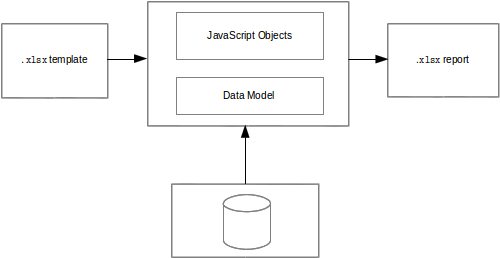
New report creation
To create a report, perform the following actions:
-
Select a New item in the parent directory context menu, or select the parent directory and click New Filе in the main menu, or click New File on the toolbar, or use a corresponding shortcut.
-
Select a Reporttype in the context menu, or select Choose file type Platypus application elements Report on the wizard first step and click Next.
-
Enter the name of a new application element in the Name field and click Finish to create it, or click Cancel to cancel.
Reports editor
To open reports editor, double-click the application element in the project tree.
Edit the report template in the spreadsheet application. The following applications are used by default for different operating systems:
-
Windows: Microsoft Excel.
-
Linux: Open/Libre Office Calc.
-
Mac OS: Microsoft Excel.
To edit a report:
-
Open the Layout tab of the report editor, run the template editor by clicking Edit report template.
-
Specify the report formatting, add tags of linking to data to the template, save the report template in the template editor application.
-
On the Datamodel and Source tabs configure the data model and write the JavaScript code.
-
Implement report
onBeforeRenderevent handler in the JavaScript editor. -
Save the application element by clicking Save All on the Platypus Application Designer toolbar or by clicking theCtrl S shortcut.
Template tags
Edit the report template in a spreadsheet application.
Place tags for linking to JavaScript objects and model entities' datasets in the template cells. To access data, use the following syntax: ${propertyName}, where propertyName is the module instance object’s property.
Example of writing the name of a documents into cells:
${documents.name}
Such a template will lead to insertion of multiple rows in a resulting spreadsheet. Each row will represent documents collection item.
Similarly, you can use a complex object:
${library.documents.name}
You can use multiple tags in a single cell, for example:
Employee: ${employee.name} - ${employee.age} years
In the JavaScript code, define objects, which will be available in the template tags:
function reportA { this.docs = this.model.documents; this.library = {}; library.documents = [ {name:'foo'}, {name:'bar'}, {name:'baz'} ]; }
Add entities, which will be linked to the template, to the report data model.
When outputting collections, a new row is added for each collection element and the style of a cell, which contains tag, is set for the cells of this row.
If you know the size of the collection beforehand, you can use the
template rows instead of adding new rows for each element. To do this,
set true for the fixed special property of the collection.
If necessary, specify dynamic styles for cells. These styles will vary depending on the contents of the cell. To do this:
-
Define the style, which should be applied dynamically to the collection element cell, for the special template cell, define a label for this cell, for example,
$[0]customRow; this cell can be placed on a hidden template cell. -
Set a special cellTemplateLabel property for the collection element by inserting a link to the style cell into it, for example
cellTemplateLabel='customRow'.
Use special tags in the template in order to predetermine the transformation of data when generating the report.
To display collections, use the jx:forEach tag:
<jx:forEach items="${departments}" var="department"> ${department.name} | ${department.chief} </jx:forEach>
The jx tags may be embedded into each other. If you place opening and
closing tags on the same row, columns in this row will be duplicated.
Place the jx:forEach and jx:forEach tags on different rows to enable
duplication of rows between these tags. Other cells in rows, which
contain opening and closing tags, will be ignored.
The jx:forEach tag allows grouping of collection data by one of the
properties. To arrange grouping, use the groupBy and groupOrder,
attributes, which determine the property to be used for grouping data
and the order of outputting groups, for example:
<jx:forEach items="${employees}" groupBy="age"> Age: ${group.item.age} <jx:forEach items="${group.items}" var="employee"> ${employee.name} | ${employee.payment} | ${employee.bonus} </jx:forEach> </jx:forEach>
In this example, we group employees by age. When grouping, a new group object is created in the context of the cycle. This object contains two properties: item, which is the current group, and items, which is the collection of all objects in the group.
By default, if the groupOrder attribute is not present when grouping,
the original order of items in the collection is maintained. Use the
groupOrder attribute and assign asc and desc values for forward and
reverse sorting to this attribute.
If the groupBy attribute is used in the jx:forEach tag, the var
attribute is ignored.
Use the select attribute to determine elements of the collection which should be included into the report. In the example below, we include only employees with salary greater than 2000 into the report:
<jx:forEach items="${employees}" var="employee" select="${employee.payment > 2000}"> ${employee.name} | ${employee.payment} | ${employee.bonus} </jx:forEach>
To get access to the index of the current collection element, use the varStatus, attribute and set the name of the object, to which the status object will be assigned, for this attribute. The status object have only an index property, for example:
<jx:forEach items="${employees}" var="employee" varStatus="status"> | ${status.index} | ${employee.name} | ${employee.payment} | ${employee.bonus} </jx:forEach>
Use the jx:if tag to control output depending on the condition:
<jx:if test="${department.chief.payment > 2000.0}"> Chief Name: ${department.chief.name} </jx:if>
You can use the jx:if tag to show or hide columns; to do this, place
opening and closing tags in the same row — when exporting data, columns
contained in the body of the tag will be displayed or hidden.
Use the jx:outline tag to group rows:
<jx:outline> //any rows can go here </jx:outline>
The jx:outline tag has an optional detail attribute, which determines
the state of the row group. By default, it is set to false, which
means that the row group will be hidden.
Report API
To generate a report, create a report object by passing the required report identifier to the constructor name.
Use the report object:
-
Create an report instance using either
Reportor server report proxy byServerReportconstuctors. UseServerReportconstructor for a report generated on the server side. -
Display a report by calling the show method. The report will be downloaded and a command to open it will be executed.
-
Send the report to print by calling the print method.
-
Save the report file to disk by calling the save method; pass the path of the file, to which the report should be saved, as a parameters.
Note
When executing the report in the HTML5 browser client, calling the show(), print(), and save(reportPath) methods lead to the same results — the report file will be downloaded by your browser.
In the example below, the report is generated on client side by desktop appliction:
var r = new Report('DocumentReport'); r.params.documentCategory = 'business'; // update the model r.show(); // show report
To execute the report on the server side (from a HTML5 browser or a desktop client):
/* * @module * @public */ function DocumentReport(){ var self = this, model = self.model; // take parameter's value from self property. model.params.documentCategory = self.documentCategory; // ... } var r = new ServerReport('DocumentReport'); // provide some property to be taken as a model parameter // by the report at the server side r.documentCategory = 'business'; // Transfer the report's properties and download a report r.show();
Report’s JavaScript code prepares data for displaying, calculating new data, etc.
-
Write code in the report’s constructor to perform initialization.
-
Add code in the
onBeforeRenderevent hanler function, which will be invoked before starting the generation of report, when client calls the show, print, or save methods. -
For server-side reports think about what data should be transferred to the server side and provide properties of report proxy before calling
show()method.
The report events:
| Event | Handler parameters | Description |
|---|---|---|
|
|
Is called before starting the generation of the report |
Revision History
1-0 05.12.2012 Vadim Vashkevich Marat Gainullin
HTTP
HTTP interface
Server modules instance methods can be remotely invoked over network using simple GET or POST HTTP requests.
To make the module instance methods available for external requests,
mark it with the @public annotation.
To invoke a server method, send a request by the URL formed using the
base URL of the Servlet and the /api suffix for accessing HTTP API.
Specify the request type, the module name, the method name and parameters of method calling in the URL parameters or in the body of the POST request in the application/x-www-form-urlencoded format. The request body will contain a value, which was returned in the executed method.
If the JavaScript object is returned from an instance method, it will be serialized as JSON and string will be sent to a client as a response. If the object of the String or XML type is returned, string response will be sent to a client. It is also possible to specify the response content type explicitly.
Parameters of the server module method inocation request:
| Parameter | Description |
|---|---|
|
Request type. To execute the server module method, this
parameter should be set to |
|
Module identifier. |
|
Name of the called module method. |
|
Method’s single parameter. A single value, a string, a number or a serialized JavaScript object in the JSON format. |
|
Method’s multiply parameters. Several values, value can be
a string, a |
Example of URL for calling a server module method (URL is not encoded):
http://server/platypus/application/api?type=14&moduleName=TestModule&methodName=say¶m=Hello%20Platypus¶m[]=1[http://server/platypus/application/api?type=14&moduleName=TestModule&methodName=say¶m=Hello Platypus¶m[]=1]
HTTP request and response API
To access HTTP request and response in the JavaScript server code, use
the http property, which is available, if the method is called by the
external HTTP request.
/** * @public */ function ModuleConstructor() { var self = this; /** * @rolesAllowed tester admin */ this.doSomething = function(paramA, paramB) { // Use self.http property } }
The http property contains the following objects:
| Property | Description |
|---|---|
|
HTTP request object. |
|
HTTP response object. |
The request object contains the following properties:
| Property | Description |
|---|---|
|
Authentication scheme name. |
|
Character encoding name. |
|
Request body length in bytes or -1, if the length is unknown. |
|
MIME type of the request body or |
|
Request body as a string. |
|
Request body as a bytes array. |
|
Part of URL, the request context. |
|
Cookies which were sent by the client in the request in key-value form. |
|
Request headers in key-value form. |
|
IP address, on which the request was received. |
|
Иame of the host, on which the request was received. |
|
Port, on which the request was received. |
|
Request method HTTP name, for example |
|
Request parameters in key-value form. If several parameters have the same name, their values will be presented as an array. |
|
Additional information about the path in the request URL. |
|
Additional information about the path in the request URL, worked out to the real path. |
|
Request protocol name and version in the form of
protocol/majorVersion.minorVersion, for example, |
|
URL request string. |
|
IP address of the client or last proxy. |
|
Fully qualified name of the client or last proxy. |
|
Port of the client or last proxy. |
|
A part of the URL request from the protocol name to the request string. |
|
URL of the request. |
|
Request pattern, for example |
|
Name of the host, to which the request was sent. |
|
Port, to which the request was sent. |
|
|
In the example below, all request headers are output into the log:
for (var c in http.response.headers) { Logger.info(c + ' - ' + http.response.headers[c]); }
The response object contains the following properties and methods:
| Property/method | Description |
|---|---|
|
Current status of the response. |
|
MIME type of the response body. |
|
The text body sent in this response. The body must be set after content type. Note that content length is set automatically. |
|
The binary body sent in this response, as a bytes array. The body must be set after content type. Note that content length is set automatically. |
|
Response headers in key-value form. |
|
Adds a new header with the specified name and value to the response. |
|
Defines a new value for the response header. |
|
Adds new cookies to the response. |
The cookie object contains the following properties:
| Property | Description |
|---|---|
|
The cookie name (required). |
|
The current cookie value (required). |
|
Comment, which describes the purpose of the cookie. |
|
Cookie domain name. |
|
Cookie lifetime in seconds. |
|
Path on the server for which the browser returns this cookie. |
|
|
|
Cookie protocol version. |
In the example below, new cookie will be added to the HTTP response:
http.response.addCookie({ name : 'platypus', value : 'test', maxAge : 60*60 });
To delete cookie from your browser, set 0 for its maxAge property.